FocusCat 使用手冊
版本 0.6.17 · 2026-10-14 · 網頁版 · 回到介紹頁
1. 這是什麼
一組幫你「一次只做一件事」的小工具。
選單列的角色旁邊寫著這一段還剩幾分鐘、現在在做哪一件；點一下角色，就看得到接下來要做什麼。
快到期的事，它會自己跳出來提醒，不用你記得去看。
在 Finder、Dock 和通知裡，它的圖示是番茄紅底上的白色角色頭，頭頂一片番茄葉（0.6.2 換的）。
2. FocusCat：選單列的角色
什麼時候用：從早到晚，它就待在選單列選單列右上角有一個小角色。工作中它在跑，休息時換成休息的樣子，沒在計時就慢慢走。 角色的樣子可以換，見下面「換角色」。選單列上只有角色和時間。
點一下角色就打開面板。上面是番茄鐘與現在這件事，下面是「接下來」，有到期日的排最前面、用紅字標出來。 再下面是一排膠囊：晚點再做、今天做完、建議加進來、快到期，每一顆有自己的小圖示、寫著件數。一排放不下就排到第二行。點一顆就在原地展開那一區，再點一次收起。
每一列標題右邊的小標籤寫這件事從哪來：Jira 的卡寫「Jira」（不管你是打卡號丟進來的還是外掛帶進來的）、 跟 Claude 說的寫「對話」、外掛帶進來的寫外掛的名字、自己加的來源寫那個來源的名字。 現在、在等、接下來、建議加進來、晚點再做，每一列都有。標題太長會被截掉，標籤不會。
自己在面板打字丟進來的也標，寫「手動」。
角色什麼時候跑、什麼時候走
| 狀態 | 角色 |
|---|---|
| 工作中 | 正常速度跑 |
| 休息中 | 換成休息的樣子（設定 → 外觀可以關掉，關掉就跟工作時一樣在跑） |
| 暫停 | 定格，選單列的時間前面有暫停符號 |
| 沒在計時 | 更慢地走（設定裡可以關掉，關掉就定格站著） |
| 開會中 | 定格，選單列顯示 🎧 和會議名稱 |
螢幕鎖住或睡著的時候角色會停下來，不會為了畫看不到的動畫耗電。
番茄鐘
工作 25 分鐘、短休 5 分鐘、四輪之後長休 15 分鐘（時間可以在設定裡改）。 不會自己開始下一段——要不要繼續由你按。
分鐘數在「設定 → 番茄」改。沒在跑的時候改，選單列和面板上的時間馬上換成新的。 正在跑的時候改，這一段照舊跑完，下一段才用新的分鐘數。
關掉 App 再打開，番茄還在（0.6.15）：番茄暫停到一半時結束 FocusCat，再打開還是暫停、剩一樣的時間，按「繼續」接著倒數。隔了幾天才再打開，那一顆也還在。 正在跑的時候 App 被關掉（結束、關機、登出、當掉、強制結束，或睡眠中斷電），再打開會接著倒數，關掉的那段時間也扣掉：例如還剩 20 分鐘時關掉、過 5 分鐘再打開，剩 15 分鐘。 關著的時候這一段就該結束了，再打開那一刻就算做完，跟電腦睡醒時番茄已經到時間一樣：工作段記一顆番茄、通知照平常那樣跳，下一段等你按開始。 還沒開始就結束的，再打開還是「還沒開始」。
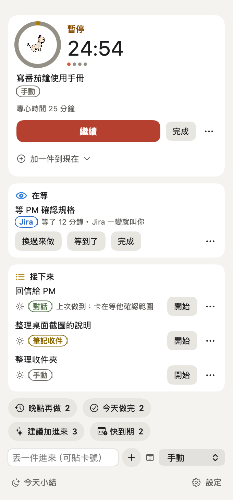
上面那張卡的倒數底下有一排小圓點，是這一輪第幾個番茄：做到第幾個就亮幾顆；亮滿的那一個番茄做完，接著就是長休。 圓點有幾顆，跟「每幾個番茄長休一次」一樣。用 VoiceOver 的話會唸「第 1 個番茄，共 4 個」。 隔天開始的第一個番茄從第 1 顆重新算，昨天沒做滿的不會接到今天。
一段時間到的時候會發生三件事：
- 面板自己打開。它會出現在你上次自己點開面板的那個螢幕，不會跟著滑鼠換到另一個螢幕。選單列擠不下、角色被藏起來時，也放在上次的位置。面板開著時接上或拔掉外接螢幕、主螢幕換了，面板會照同一套規則重新放一次，不會停在舊的位置只露出一截（0.6.16）。不想要就到「設定 → 提醒 → 時間到的時候」關掉「打開面板」。
- 響一聲。聲音在「設定 → 提醒 → 提示音」的下拉選單選：Mac 內建的提示音（低音、吹氣、瓶子、青蛙、放克、玻璃聲、英雄、摩斯、叮聲、啵、呼嚕、Sosumi、潛艇聲、叮噹）、角色的叫聲，或關。選的時候會當場播一次。
- 角色做「時間到」的表情：面板上的角色坐下來，旁邊冒兩道響鈴線，3 秒後恢復。
角色的叫聲：內建的白底虎斑附一段叫聲。自己放的角色要有叫聲，就在那個角色的資料夾放一個聲音檔（見「換角色」）。 目前的角色沒有叫聲時，提示音那一列會寫「目前的角色沒有叫聲，先用玻璃聲代替」，旁邊有一顆「去加叫聲」，按了會切到「設定 → 外觀 → 角色造型」。 有叫聲時，那一列底下寫用的是什麼叫聲：內建角色寫它是什麼叫聲，自己放的角色寫「用目前角色的叫聲」。
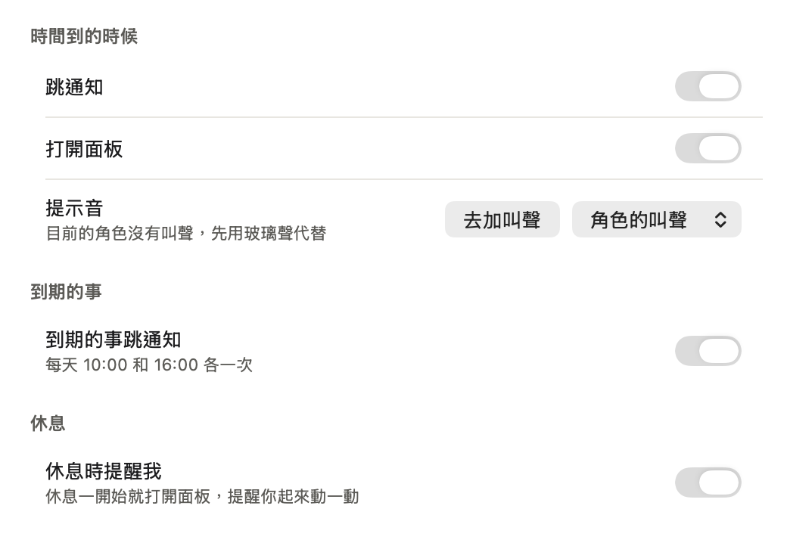
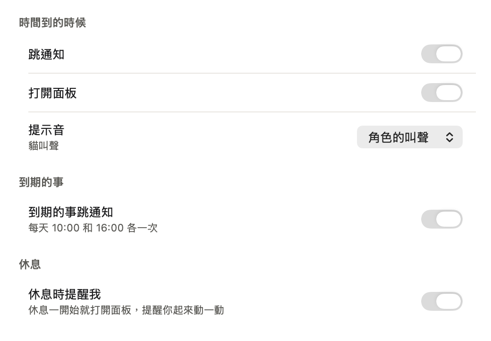
另外還會跳一則通知。不想要就關掉「設定 → 提醒 → 時間到的時候 → 跳通知」。
做完一個番茄，角色頭上會冒一顆愛心，「今天完成 N 個」加一。
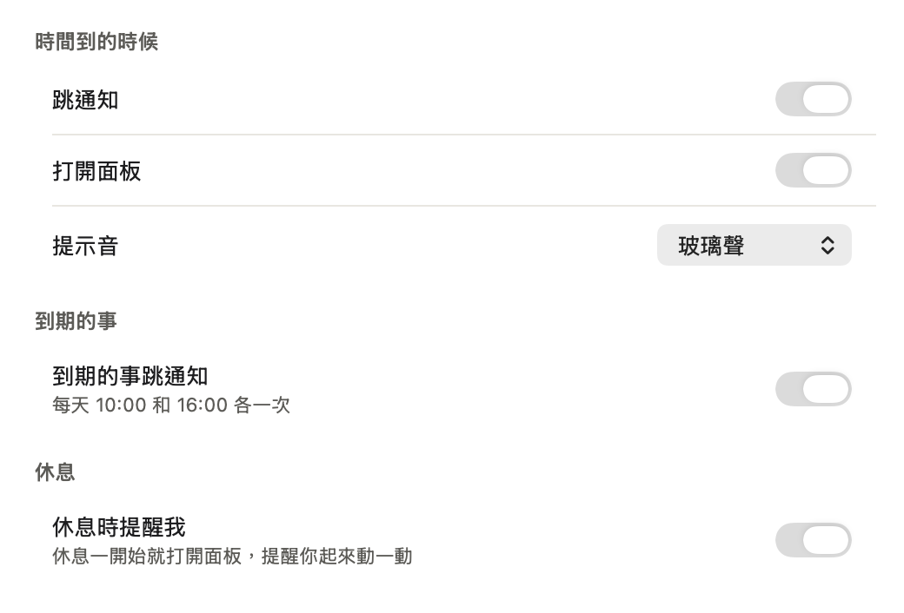
休息提醒
工作段一結束，面板會跳出來（「打開面板」開著時），最上面寫「該休息了」， 主按鈕是「開始休息」，旁邊有一顆「跳過休息」（不休息，直接開始下一段工作）。
按了「開始休息」，上面那張卡換成休息畫面：
- 一個綠色的圓環，跟工作時那個圓環一樣，休息過了多少就繞多少，繞滿一圈休息就結束。
- 圓環中間是角色休息的樣子，幾張圖輪著換（造型只有一張休息圖就一直是那一張）。系統開了「減少動態效果」的話，停在第一張不換。
- 圓環底下是剩下的時間，大字，例如「3:42」；再下面一行小字寫短休或長休，暫停時多寫「暫停中」。
- 休息時面板會出現一句提醒，例如「喝口水再回來」「站起來走兩步吧」。同一天同一輪固定是同一句。
- 長休有另一組句子，例如「離開螢幕久一點，好嗎」。句子裡不寫幾分鐘，因為長休多長是你自己設的；剩幾分鐘看大字的倒數。
- 回來工作：休息結束，直接開始下一段工作（休息暫停中按也一樣）。
- 今天不再提醒休息：今天休息時不再跳出來，明天 00:00 自己恢復。
- 休息時「接下來」只露第一件（休息完要做的那一件），其他的收在「還有 N 件」，按一下照樣全部展開。
「休息時提醒我」關掉時沒有休息畫面，面板最上面的主按鈕在休息中寫「回來工作」，按一下就直接開始工作，不必再按一次開始。
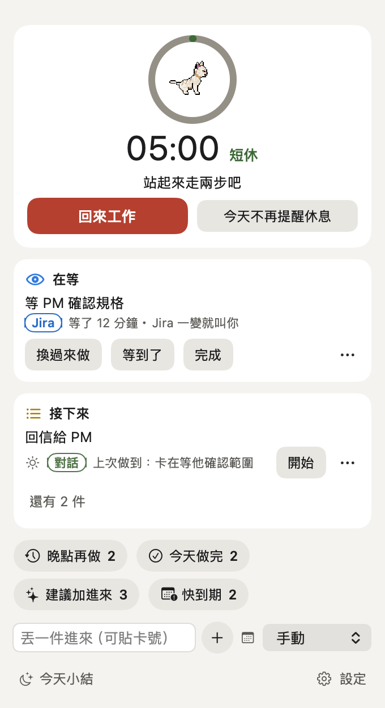
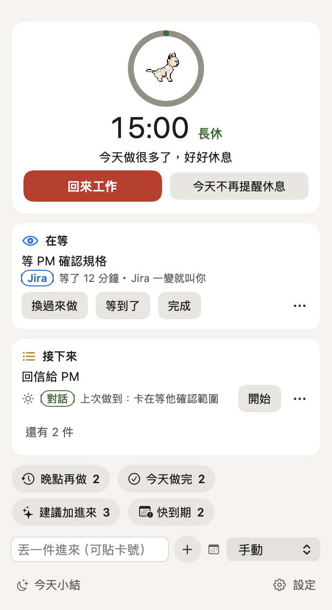
休息走完不會自己開始工作，跟以前一樣要你按。
設定在「設定 → 提醒 → 休息」：
| 設定 | 預設 |
|---|---|
| 休息時提醒我（休息一開始就打開面板，提醒你起來動一動） | 開 |
「今天不再提醒休息」要在休息畫面上按。今天按過的話，這一組最後會多一列「已靜音到明天 00:00」，旁邊有一顆「恢復提醒」；平常沒有這一列。
沒按開始時再提醒（0.6.16）
時間到時，面板只跳一次。你沒看到、或看到了忘了按，FocusCat 會再提醒你：
- 工作段做完，還沒按「開始休息」或「跳過休息」：5 分鐘後跳一則通知「該休息了」。
- 休息走完，還沒按「開始」：5 分鐘後跳一則通知「休息完了」。
點通知會打開面板。之後每 5 分鐘再提醒一次，連第一次最多 3 次就停，不會一直吵。
第一次提醒起，選單列的角色會坐下來、旁邊冒兩道響鈴線，意思是「在等你」。提醒停了，角色還是這個樣子，等你按任何一顆才恢復。開始、跳過休息、換一件、晚點再做、丟一件進來，都算按了。
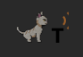
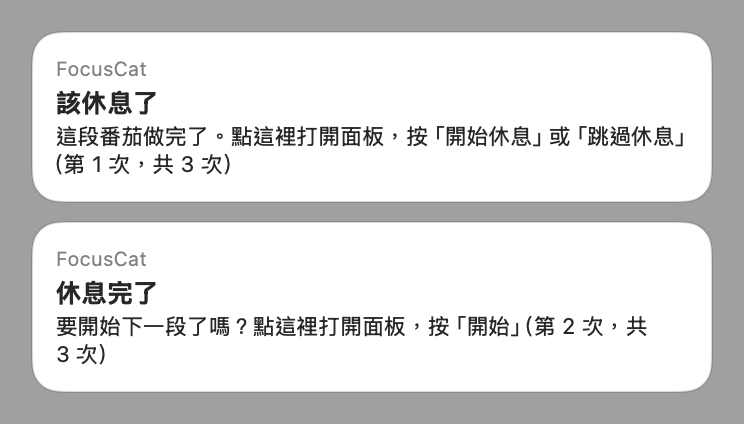
這些時候不提醒：
- 開會中、螢幕鎖住、電腦睡著。回來之後從頭算 5 分鐘，不會一回來就跳。
- 勿擾模式開著：通知不跳出來，收在通知中心（macOS 自己擋的）。角色照樣換成在等你的樣子。
- 今天按過「今天不再提醒休息」：工作段做完那種不提醒，角色也不換。提醒過之後才按，角色也會回到平常的樣子。休息走完那種照舊提醒。
結束 FocusCat 再打開時，番茄照存的樣子接回來（見上面）。關著的時候就該結束的那一段，打開那一刻算做完，從那一刻起算 5 分鐘。
設定在「設定 → 提醒 → 沒按開始時再提醒」：可以關掉，也可以改「隔多久」（1～30 分）和「最多幾次」（1～10 次）。關掉之後，「隔多久」和「最多幾次」會收起來。角色已經在等你時才關掉，它也會回到平常的樣子。 系統沒有允許 FocusCat 發通知時，這一組多一行「通知權限沒開，只會換角色的樣子」，這時只換角色、不跳通知。
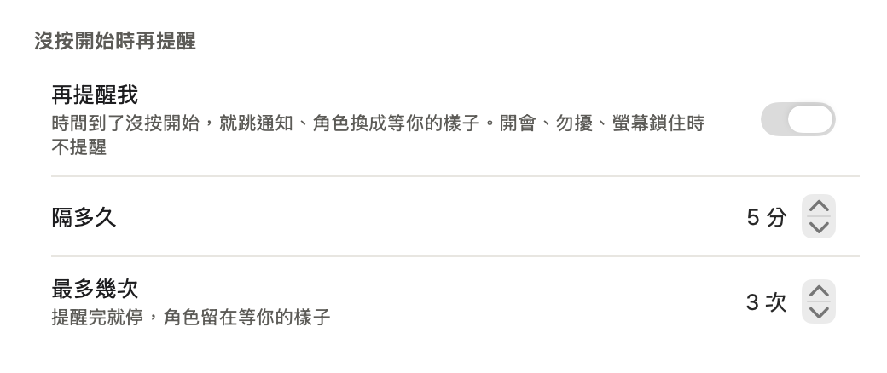
現在專注
平常一次做一件（要同時追好幾件，見下一段「同時追好幾件」）。卡上三顆按鈕：主按鈕（開始、暫停、繼續…）、完成、⋯。 換一件和晚點再做是「⋯」選單最上面兩項。 「換一件」按下去就是「被打斷」，這件回到「接下來」。 卡住了就按「晚點再做」，勾「做到哪？」旁邊的「卡住了」；有更急的事，按「接下來」、「晚點再做」或「建議加進來」那一列右邊的「開始」：手上已經有一件時按下去就換過去，手上那件回到「接下來」，記成「有更急的」。 換完，選單列角色底下會跳一個小視窗（見下面「換一件」）。 按下去那一刻，如果手上那件已經被換掉了（例如用快捷鍵、指令列或 agent），或讀不到現在在做哪件，就不換；小視窗會寫原因，請你再按一次「開始」。
換走的時候可以留一句「做到哪」，下次回到這件事時它會顯示出來。
鍵盤也按得到：面板開著時，空白鍵就是那顆主按鈕（開始、暫停、繼續…），⌘↩ 是「完成」。 面板剛打開時游標不在任何輸入框裡（用 ⌘Tab 切到別的 app 再切回來，游標留在原本的地方，正在改的名稱也不會被取消）；點進輸入框之後空白鍵就是打字（框是空的也一樣），點框以外的地方或按 Esc 離開之後，空白鍵又是主按鈕。按鈕滑過去的提示也寫著這兩個鍵。
「現在」那張卡右上的「⋯」是一個下拉選單，裡面有「在等（不算專心）」：手上這件卡在等別人，就把它移到「在等」那一格（見下一段）。
同一個選單最上面那行 🍅 1 / 3 個 是預計幾個番茄：按「預計多一個番茄」估一個數字，按「預計少一個番茄」減，
減到 0 就是不估。「今天小結」會列出「當初估幾個、實際做了幾個」。
面板的小動畫
面板有幾個小動畫：
- 面板從選單列的角色那裡長出來，收起時縮回去。收到一半再點角色，它會從當下的大小長回來，不用等它收完。
- 按「完成」後，「已完成」那一行前面彈出一個綠色圓圈，勾一筆畫上去。
- 倒數時只有變了的那一格數字往下滾。數字寬度不變，旁邊的字不會跟著晃。
- 滑鼠移到「接下來」這類清單的一列上，那一列淡淡亮起、微微浮起。
- macOS 26 上，面板的底是系統的玻璃材質。更舊的系統、或系統設定開了「降低透明度」，是實心底。
系統設定開了「減少動態效果」的話，這些動畫都換成很短的淡入淡出：不縮放、不移動、不回彈。
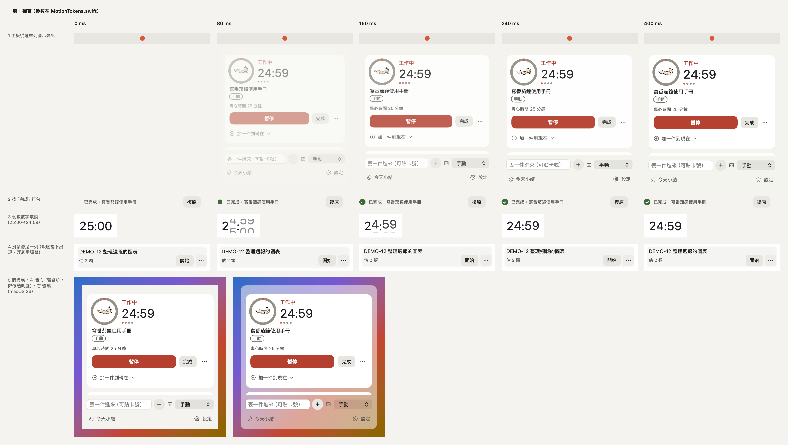
名稱太長的時候
面板上每一列，第一行只放名稱，最多兩行，再長就在尾端截掉、補「…」。滑鼠停在名稱上看得到全名，VoiceOver 也唸全名。 來源標籤、狀態、按鈕都放第二行：左邊是資訊，右邊是按鈕。現在、接下來、在等、建議、晚點再做、快到期、今天做完、類別看板都是這樣排。
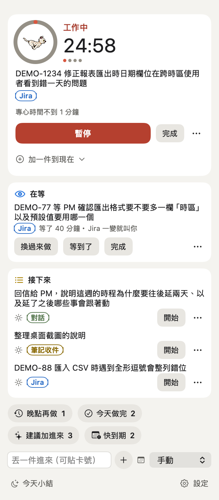
「設定 → 外觀 → 選單列顯示」選「角色＋時間＋標題」時，選單列會寫現在這件的名稱。最多 12 個字，多的變成「…」，滑過去看得到全名。好幾件一起做時，只寫主要那件。
12 個字來自 pomodoro/Sources/PomodoroCore/Presentation.swift 的 MenuBarText.maxTitleLength。
同時追好幾件
什麼時候用：手上真的有兩三件要一起盯，例如一邊改欄位、一邊等審查留言、一邊回信「現在」可以放好幾件，不限件數。大家共用上面那一個番茄鐘計時。
怎麼加進來：手上已經有一件時，「現在」那張卡最下面有一顆「加一件到現在」（前面一個圈起來的加號、後面一個小箭頭），點開挑「接下來」裡的任一件。 也可以點「接下來」或「晚點再做」那一列右邊的「⋯」，選「加到現在（一起做）」。
畫面長這樣：上面的狀態字寫「工作中・一起做 3 件」。底下一件一列：第一行是名稱，第二行右邊有自己的圖釘、「完成」和「⋯」。 超過 3 件時只先列 3 件，按「還有 N 件」看全部，按「收起」收回去。
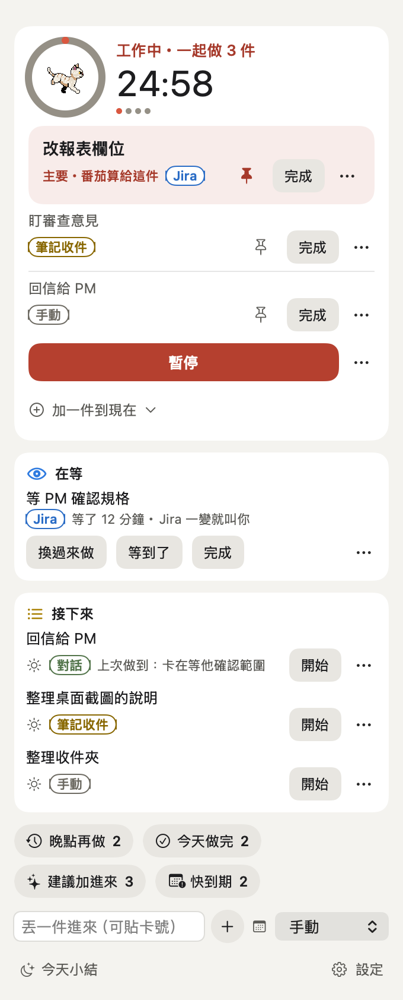
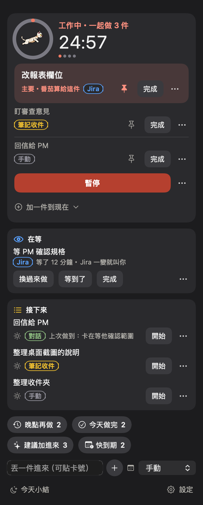
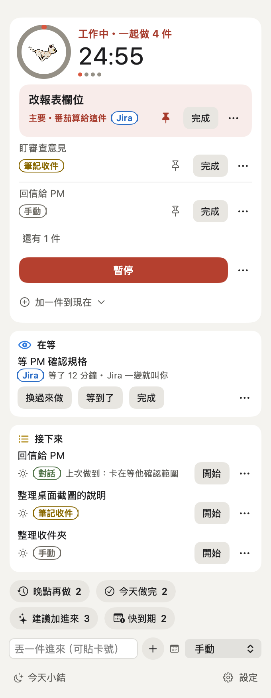
每一件自己動：
- 按那一列的「完成」，只有那一件做完，其他件繼續計時。
- 那一列的「⋯」裡有「換一件」「晚點再做」「移出現在（放回接下來）」。「移出現在」不算被打斷，也不會問「做到哪」。
- 第一件是主要的那件：整塊淡紅底，上面寫「主要・番茄算給這件」，字也比較大。其他件字小一號。
- 想換一件當主要，按那一列第二行右邊的空心圖釘（滑過去寫「換成主要（番茄只算這一件）」）。那一件換到第一位，圖釘變實心；原本的第一件排到第二，圖釘變回空心。主要那件的實心圖釘按不下去：主要只能換給別件，不能取消。
- 點「接下來」某一列的「開始」，選單列角色底下的小視窗會先問「要換掉哪一件？」。挑一件按「換過去」才會換，按「取消」或 Esc 什麼都不換。

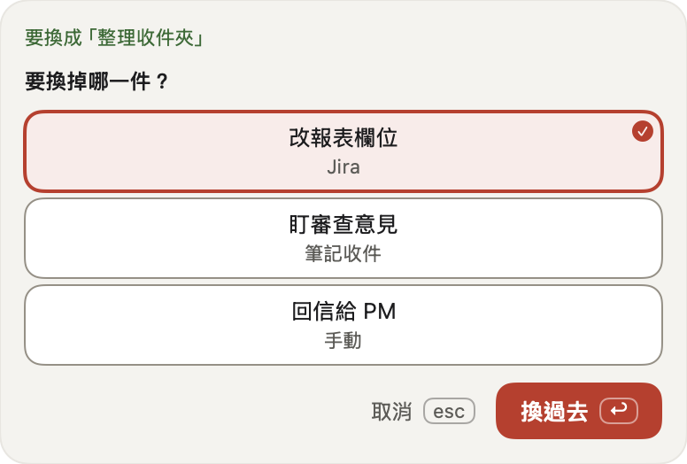
選單列：只有一件時照舊；兩件以上，時間後面寫「・3 件」。
時間怎麼算：每一件都記自己跟著的時間。「今天小結」第一行的專心時間只算一次實際經過的時間，後面註明「一起做的只算一次」； 底下每一件列自己的時間，有跟別件重疊的標「一起做」。三件一起做 25 分鐘，專心時間是 25 分，不是 75 分。
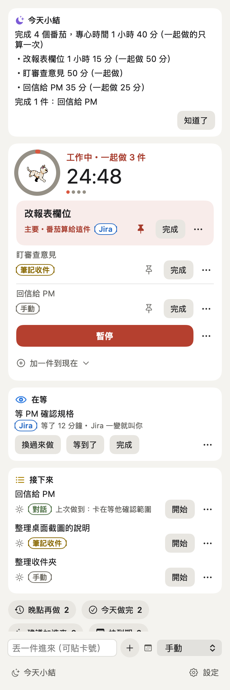
跟 Claude 說：Claude 那邊的「目前專注」提醒會列出全部。你這次要做的是其中一件，它就不會問要不要換。
指令列是 focus join <key>（加到現在）、focus leave <key>（移出現在）、focus primary <key>（設為主要）；
好幾件時 focus done、focus park、focus switch 要帶那一件的 key，不帶會被擋下。
專心時面板自動縮小
工作計時中、手上也有一件事的時候，打開面板只看得到那一件：角色、事情名稱、剩下的時間、一條細進度條、第幾個番茄的小圓點、暫停與完成。
底下一行摘要寫「接下來 3・在等 1・晚點再做 2」。點它就展開「接下來」與「在等」，再點一次收起。 關掉面板再打開，又是縮小的。丟一件進來那一格一直都在。
這些時候不縮：暫停中、休息中、沒在計時、開會中、在等的事有一件到了、在等的事 Jira 讀不到要你自己按。
面板開著時才開始工作，這一次不會突然縮小，下次打開才縮。反過來，縮小時你按了暫停、或等的事到了，會當場變回完整的。
不想要就到「設定 → 外觀 → 面板」關掉「專心時面板自動縮小」。
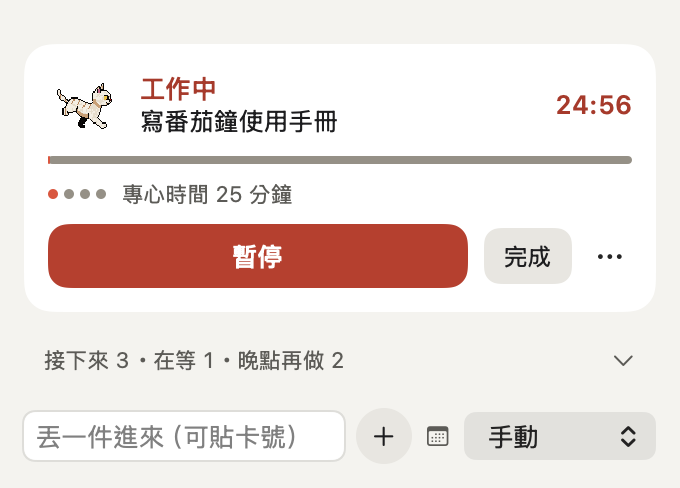
在等
有些事不是你在做，是在等別人：等 PM 回信、等 Jira 卡被推到下一關。 這種事放進「在等」這一格。它在「現在」下面、「接下來」上面，只有在等東西的時候才出現。
- 等待不算專心時間。「今天小結」會多一行「「在等」N 件（等到 M 件），等待不算專心時間」。
- 可以同時等好幾件。面板一次列 3 件（有進展的排前面），再多就收成「還有 N 件」，點一下全部展開。
- 怎麼放進來：「接下來」每一列的 ⋯ 裡、或「現在」那張卡的 ⋯ 裡，都有「在等（不算專心）」。
那一格底下的一行字告訴你它怎麼知道「到了」：
| 寫著 | 意思 |
|---|---|
| 等了 12 分鐘・Jira 一變就叫你 | 是 Jira 或外掛帶來的卡。app 每 5 分鐘問一次那一支外掛，面板關著也問 |
| 等了 12 分鐘・到了按『等到了』 | 是你自己記的事，app 沒辦法幫你看，到了自己按 |
| Jira 外掛沒開，到了要自己按 | 本來可以幫你看，但那支外掛關著（設定 → 外掛） |
| 有進展了（Jira） | 卡動了。這時會跳一則通知「等的事有進展了」，面板不會自己跳出來 |

每一件都有自己的按鈕，按哪一件就只動那一件：換過來做會在那一列先問「換掉，還是一起做？」：一起做把它加進「現在」、原本那件照舊是主要；換掉把它拿到「現在」（原本在做的回「接下來」最前面）。手上沒在做事時這顆寫開始做，按了直接開始；等到了是手動標到了（到了之後這顆就不見）；完成是那件其實已經做完了，按了就從在等拿掉、算進今天做完（不算專心時間）。 ⋯ 裡還有「不等了，放回接下來」「不等了，晚點再做」。有進展的通知也是一件一則。
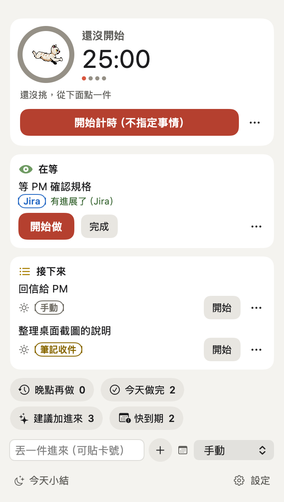
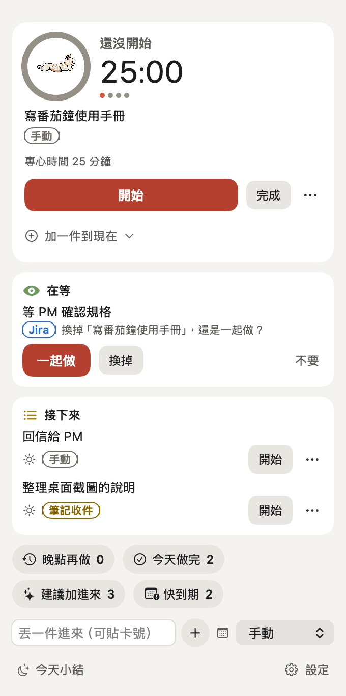
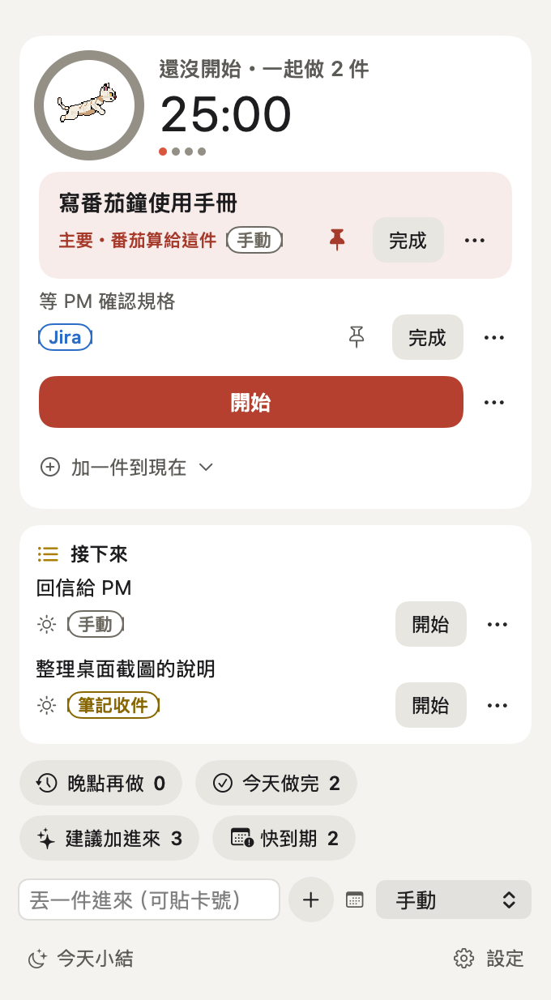
類別與看板
什麼時候用：有些事不想算進專心時間（例如回訊息），或某支外掛帶來的事想放在面板的一張卡裡集中看每一件事都屬於一個類別。手動加的事都是「一般」；外掛帶來的事，跟著那支外掛的類別。 沒碰過類別的話，只有「一般」一類，用起來跟以前一樣。
到「設定 → 類別」管。每一類有五個設定：
| 設定 | 關掉或改了會怎樣 |
|---|---|
| 算專心時間 | 這類事拿到「現在」的時間不算進專心時間；今天小結多一行「不算專心：…」。番茄數照算 |
| 放進建議 | 這類外掛的卡不出現在「建議加進來」 |
| 輪到我時通知 | 外掛說「輪到你」時，跳一則「等的事有進展」通知。第一次看到的不跳 |
| 這一類可以拖曳換順序 | 關掉的話，這類事在面板上不能用滑鼠拖，位置也固定：別的事拖過去會跳過它。「⋯」的上移、下移和 ⌥↑／⌥↓ 照常能排它（0.6.10，預設打開；0.6.14 起位置固定；見「排順序」） |
| 在面板上給「X」一張自己的卡 | 打開：這類事只出現在那張卡。關掉：跟其他事一起放在現在、接下來、晚點再做、在等（0.6.14 以前叫「放在面板：照舊／自己一區」，存的設定不變） |
頁面最上面「面板長這樣」（0.6.14）：先列面板上固定的四區，每一區一句放什麼。固定的區不能改名，也不能刪。再列有自己一張卡的類別。 類別管的是「這件事是哪一種」，固定的區管的是「這件事現在在哪一步」。
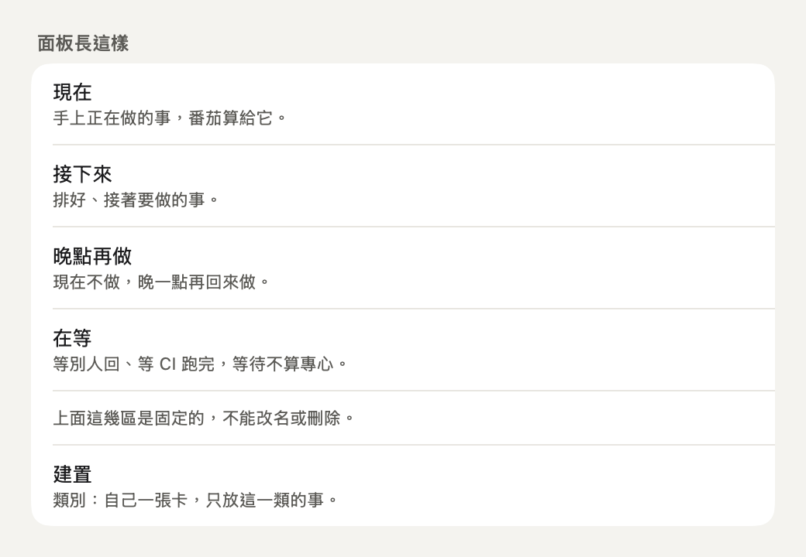
放在自己一張卡的類別，「這一類可以拖曳換順序」會變灰，旁邊寫「這一類放在自己的卡上，不能拖曳」。那張卡上的順序由外掛給。這類事拿到接下來、在等之後，照樣能拖。
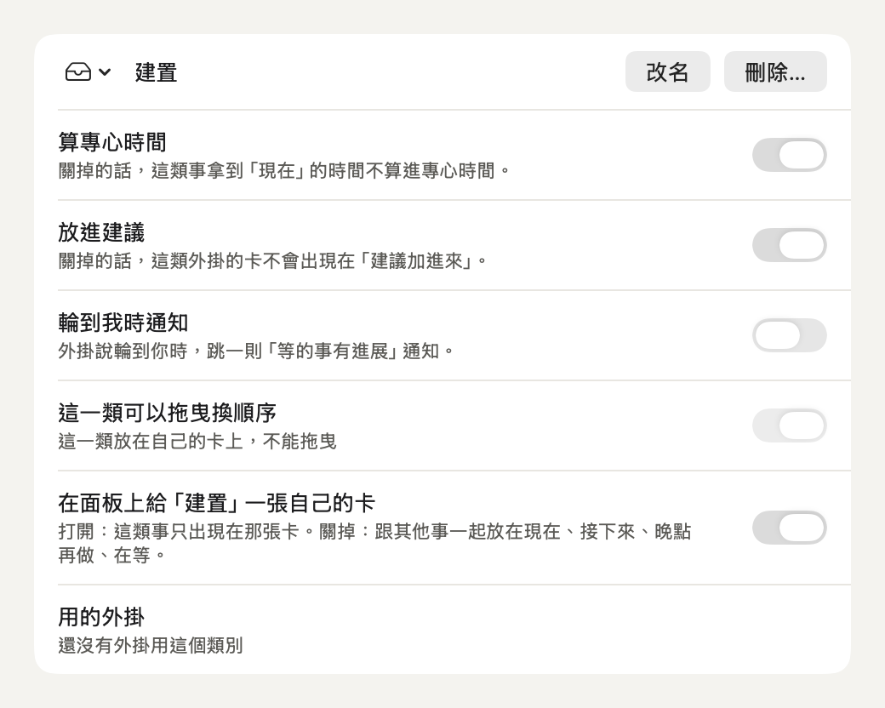
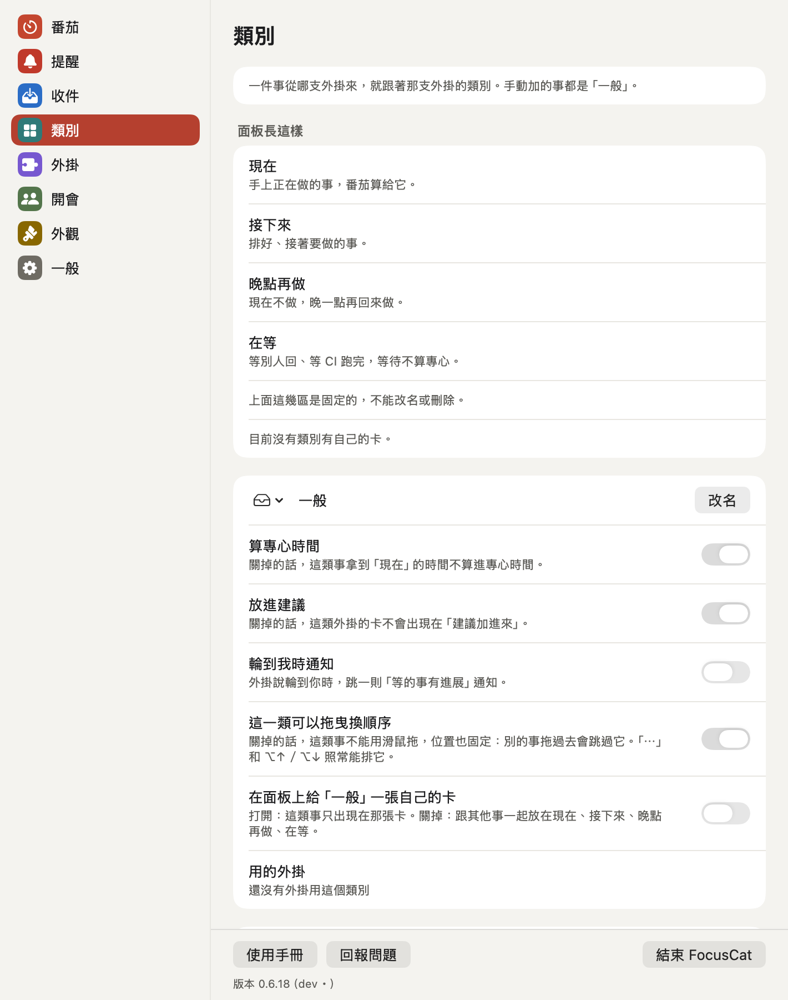
名字前面那顆圖示點開可以換（從一份固定的清單挑，旁邊一定配名字）。「改名」原地改，Enter 存、Esc 不存；名字空白、重複、超過 20 字，底下會寫原因。 「新增類別」加一類；「刪除…」會先問一次；「一般」不能刪。外掛可以自己建它要的類別，那一類會標「由外掛 X 建立」。 類別設定讀不懂時，頁面只剩一行紅字和「重設成預設」。
外掛算哪一類，在「設定 → 外掛」點進那一支，改「類別」選單；選最後一項「外掛建議的（…）」就回到外掛自己建議的那一類。指令列是 focus categories 與 focus plugins category。
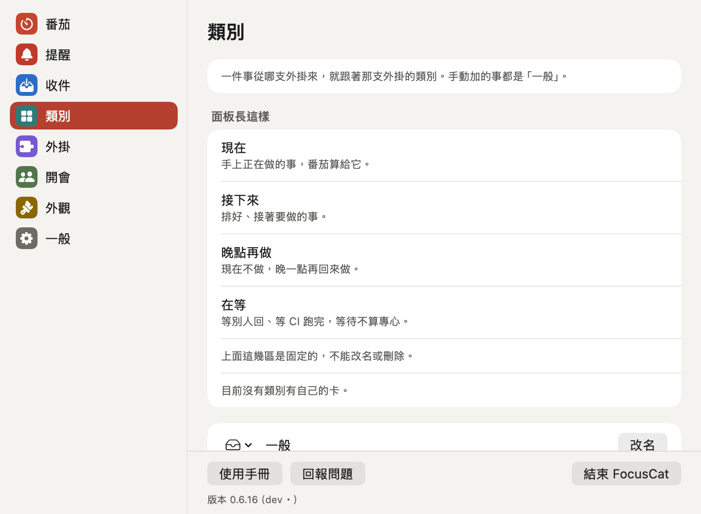
看板：打開「在面板上給「X」一張自己的卡」，面板在「在等」後面多一張卡。卡頭是類別的圖示和名字，右上寫「5 件・3 件輪到你」。每一列這樣排：
- 第一行是名稱。點了會開網頁的，名稱後面有一個小箭頭。
- 第二行左邊是外掛給的狀態字和一行說明。狀態字像是「輪到你」「可能卡住」「失敗」，一定寫出字來，不只靠顏色。
- 第二行右邊最多一顆按鈕，其他的收在「⋯」。
按鈕只有三種：打開網址、內建的動作（拿到現在、加到接下來、放進在等）、交回外掛處理。交回外掛時，那一列寫「交回外掛中…」；失敗了寫紅字原因。
外掛讀不到時，卡還在，寫出原因，上一次的內容留著。這一類一件都沒有時不畫這張卡。縮小版只寫一句，例如「建置 5 件，3 件輪到你」。
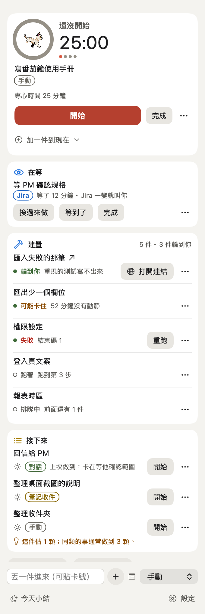
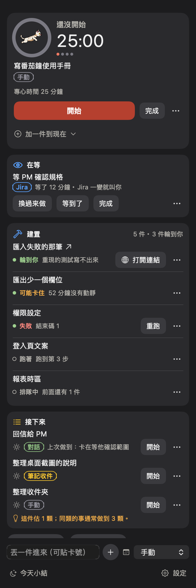
自動化工作
什麼時候用：你有腳本或 AI 在背景跑工作，想在面板上看它跑到哪、要不要你出手裝了「自動化工作」外掛，面板會多一區「自動化」。你的腳本或 AI 背景工作，每一件都列在這一區。 它只讀狀態檔，不會執行檔案裡的任何東西。
怎麼裝：到「設定 → 外掛」，在「可以加的外掛」找到「自動化工作」，按「安裝」。 裝好會多一個類別「自動化」：不算專心時間、不進建議、在面板自己一區、輪到你時通知。這四項都能在「設定 → 類別」改。
工作怎麼出現：你的腳本把狀態寫成一份 JSON，放進 ~/Library/Application Support/FocusCat/automation/。
這個資料夾外掛不會幫你建，第一次要自己建。
一件工作會是這幾種樣子：
| 這一列寫什麼 | 意思 | 通知你嗎 |
|---|---|---|
| 名稱，例如「跑測試：編譯中（12 分）」 | 正在跑。腳本有寫現在在哪一步，名稱後面就接「：步驟中（N 分）」，N 是這一步做了多久 | 不通知 |
| 「【排隊中】…」 | 排隊，還沒開始 | 不通知 |
| 「【做完了】…」 | 做完了。會一直列著，等你的腳本把它從狀態檔拿掉 | 不通知 |
| 「【要你處理】…」 | 停下來等你，後面接它寫的原因 | 通知 |
| 「【失敗了】…」 | 失敗了，後面接它寫的原因 | 通知 |
| 「【可能卡住了】…」 | 腳本太久沒更新狀態檔，後面寫幾分鐘沒動 | 通知 |
通知只在一件工作「變成」要你處理、失敗了或可能卡住了的那一刻跳一次。第一次看到時就已經是這樣的，不跳。 「設定 → 類別」裡「自動化」的「輪到我時通知」關掉的話，都不跳。 狀態檔標成乾跑（只是試跑、不算數）的，名稱前面多「乾跑」兩個字，一律不通知。
有一份狀態檔讀不懂時，整張卡寫「讀不到」，並講是哪個檔，不會當成沒事。
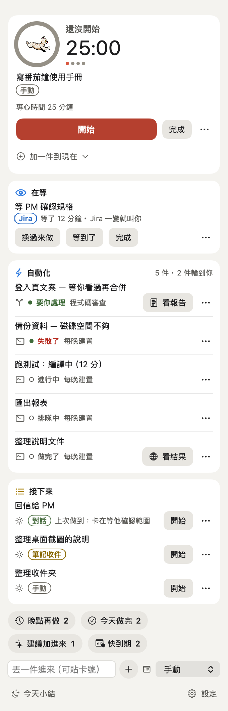
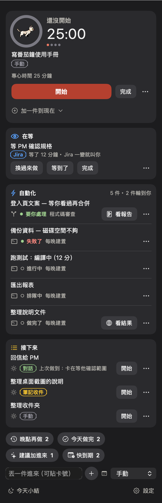
按鈕打開要你看的東西。狀態檔可以帶幾份要你看的文件，例如報告或紀錄，最多 4 份。 那一列會多幾顆按鈕，第一顆直接看得到，其他的收在「⋯」。按了就打開。
按鈕的字前面可以有一個小圖示，例如報表或時鐘，由腳本或外掛挑。沒挑的話，照連結種類配：本機檔案配文件、本機網站配電腦、網頁配地球。
圖示的名字清單與配法來自 pomodoro/Sources/PomodoroCore/ActionIcon.swift（defaultFor）。改了那裡要改這裡。
按鈕能打開哪幾種：
- 網頁：
https://開頭的網址。 - 本機網站：
http://localhost、127.0.0.1、[::1]開頭的網址，可以帶 port，例如你的腳本開的預覽頁。只有自動化工作收這種。別的網站用http://不收，要用 https。 - 本機檔案：放在你家目錄底下的報告、紀錄。只收這幾種副檔名：.md、.html、.htm、.pdf、.png、.jpg、.jpeg、.txt。按了用 Mac 預設的 App 打開。別的外掛給的連結也可以開這種檔。
- 程式一律不開：.app、.sh、.command、沒有副檔名的檔都不收。設了執行權限的檔也不開，就算它叫 .md。
- 家目錄外面的檔不開：用捷徑（symlink）繞出去的也不開。
- 檔案不在了，面板最上面會寫「找不到檔案：」加檔名。
副檔名清單來自 pomodoro/Sources/PomodoroCore/LinkPolicy.swift 的 fileExtensions，本機網站的三個主機名稱是同一檔的 loopbackHosts。改了那裡要改這裡。
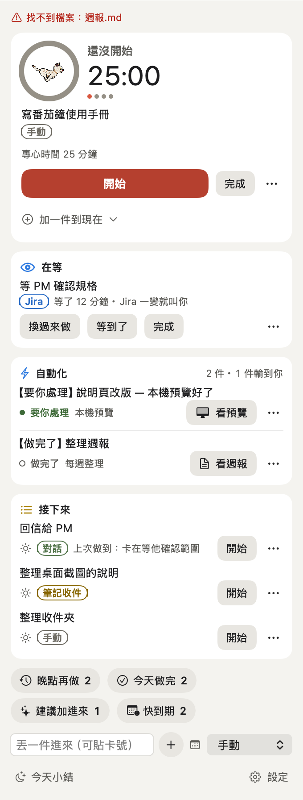
升級之後：外掛裝好就是你的檔，升級 FocusCat 不會自己換掉。 這一版附的自動化工作跟你裝的不一樣時，面板上面會多一段橘字，問你要不要「換成附的版本…」，見「換成附的版本」。
要自己寫狀態檔的人：格式寫在 外掛規格 plugins.md（裝好的 app 裡附一份：FocusCat.app/Contents/Resources/docs/plugins.md）「自動化工作外掛」那一節。
不寫程式的話，照「怎麼做自己的外掛？」那份教學的範例 3，請 AI 幫你改腳本。
外掛寫的一段文字
有一種外掛不帶事情來，只寫一段文字，叫「文字外掛」。它在三個時候更新：番茄結束、打開今天小結、估了幾個番茄之後。寫出來的字畫在下面三個地方之一：
- 講某一件事的：畫在那一件底下，一行灰字，前面一顆小燈泡。外掛要提醒你注意時，那一行是橘色。
- 沒講哪一件、類別選「自己一區」的：畫在那個類別的看板最下面。
- 類別選「照舊」的：畫在今天小結的「回顧」。
更新中或讀不到時，上一次那段留著。指令列是 focus insights。
丟一件進來
面板下面那一格打字就送出，它會排在「接下來」最前面，不會打斷你正在做的事。
不想開面板的話，任何時候按你在 設定 ▸ 收件 ▸ 快捷鍵 ▸ 丟一件進來 選的那一組（沒選過的話，會自動挑一組不跟 macOS 衝突的，多半是 ⌃⇧Space），會跳出一個小輸入框。 小框最上面寫「丟一件進來」，最下面兩顆：左邊「取消」（Esc），右邊紅色的「送出」（Enter），按鈕上也標著 esc 和 ↩。 這個小框就是面板最下面那一格：一樣可以選來源、按日曆鈕設到期日、當場新增一個來源，打卡號一樣會先預覽標題。 標題還沒查回來就按 Enter 也沒關係，會先查完再決定存不存。查的時候框下面會寫「正在查 Jira 的 …」，Jira 慢的話這一格會灰掉一陣子。 存好了會說一句「已記下，排在「接下來」最前面」再自己收起；沒存成（例如卡號不完整、讀不到 Jira）會把原因留在框裡，打的字也留著，不用重打；之後在面板上另外做別的事，框裡那一句也不會換掉。按「取消」或 Esc 關掉。
從別的地方送進來也可以：指令 focuscat add "回信給客戶"、
把 .json 丟進資料夾、自己寫腳本，做法寫在
app 裡附的 connect-your-stuff.html（在 FocusCat.app/Contents/Resources/）。要從 Apple 提醒事項自動收，
到「設定 → 收件 → 從 Apple 提醒事項收件」打開（第一次會跳系統權限詢問）。
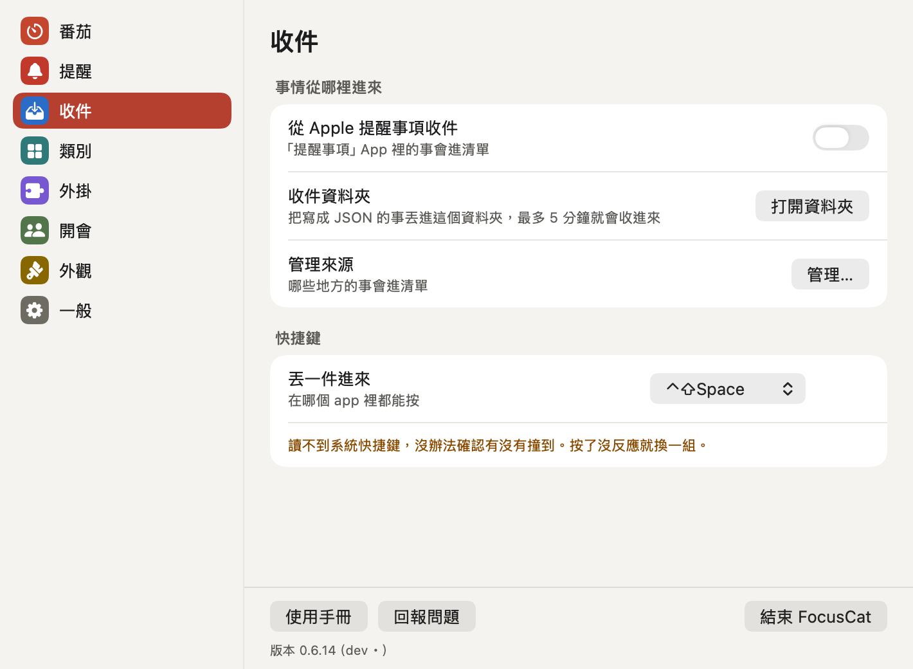
早上三件事、今天小結
「接下來」每一列左邊有一顆小太陽，點它就是「今天先顧這件」（最多三件）。挑過的那幾件太陽會亮著。
按面板最下面的「今天小結」會給一段小結：幾個番茄、完成了什麼、開會多久、中途換了幾次、估得準不準。 它只是給你看數字，計時照跑、清單不動，按「知道了」收起來。
有些類別關掉了「算專心時間」，例如「回訊息」。這些事的時間不算進專心時間，小結多一行寫扣了多少，例如「不算專心：回訊息 40 分」。 沒有這種事就不會出現這一行。番茄顆數照算。
開會的時候
行事曆上有會、或麥克風被別的 app 佔用超過一分鐘，FocusCat 就知道你在開會： 番茄自動暫停，角色換成開會的樣子。它自己發現會開完了的時候，只在面板上說一聲， 要不要繼續番茄由你按，不會自己接著跑。
會提早結束、或者行事曆上那一場還沒到時間就散了，按面板上的「散會」： 開會狀態當場收掉，剛才因為開會被暫停的番茄會接回去繼續跑。 按完之後，就算行事曆上那一場還沒過、麥克風也還被佔著，FocusCat 也不會再把你判回開會—— 要等那一場過了、或麥克風放開過一次，下一場才會重新開始算。 不小心連按兩次「散會」也一樣，不會被判回開會。
行事曆上那一場已經結束 15 分鐘，麥克風卻還在用，FocusCat 會問一次「還在開會嗎？」： 面板上多一張卡，另外跳一則通知。按「散會」跟上面一樣收掉；按「還在開」就照舊當成開會中。同一場只問一次。
你自己按的暫停不會被動到。會被接回去跑的，只有「從開會那一刻起就一直停著」的那顆番茄。 中間只要你自己按過一次繼續、跳過或重設，它就不算是因為開會才停的； 之後你自己按的暫停會一直停在那裡，等你自己按繼續。
要看行事曆，得先到「設定 → 開會 → 行事曆網址」貼上行事曆的 ICS 網址（Outlook 的「發佈行事曆」那一條，http、https 或 webcal 開頭），按「存起來」就生效。 沒貼網址的話，「行事曆」那一列會寫「還沒填網址，這一項先不會用到」，這時只靠麥克風判斷，面板上也不會出現行事曆的警告（行事曆不一定要設）。 行事曆每 5 分鐘重讀一次。偶爾讀不到（網路斷一下、剛睡醒）時，上一次讀到的那一份裡正在開的會照樣算開會，不會因此被當成散會；除此之外只要這次讀不到，面板就寫「行事曆讀不到」，不會當成「現在沒有會議」。
不想要這個功能就到「設定 → 開會」關掉；行事曆與麥克風也可以只留一個。
開始番茄時打開勿擾模式
macOS 不讓 app 直接開關專注模式，要借「捷徑」App：
- 打開「捷徑」，新增一個捷徑，加入動作「設定專注模式」→「勿擾模式・開啟」，取名例如「開勿擾」。
- 再做一個一樣但選「關閉」的，例如「關勿擾」。
- 回到 FocusCat「設定 → 番茄 → 開始番茄時打開勿擾模式」，按「設定…」把兩個名字填進去。
之後每次開始工作就自動開、那一段結束（做完、暫停、跳過）就自動關。 名字打錯的話存檔時會當場告訴你，不會安靜地沒反應。
每個狀態長什麼樣
這幾張都是用假資料拍的（FocusCat --snapshot），不是你的真實畫面。
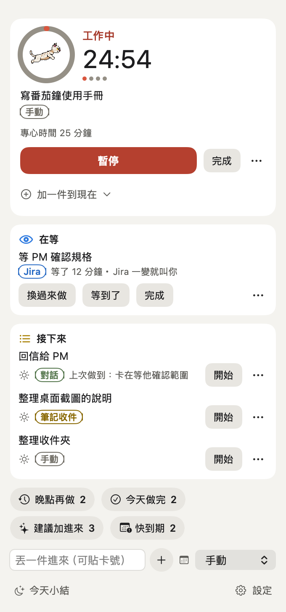
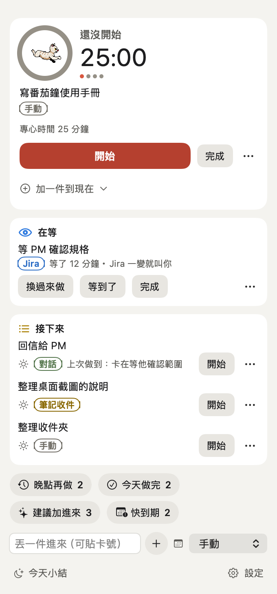
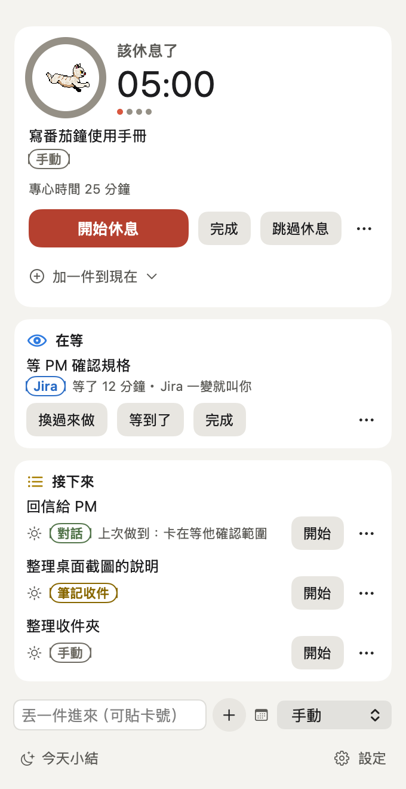
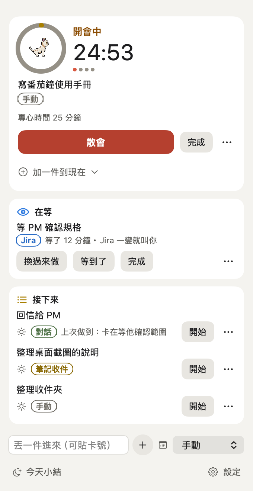
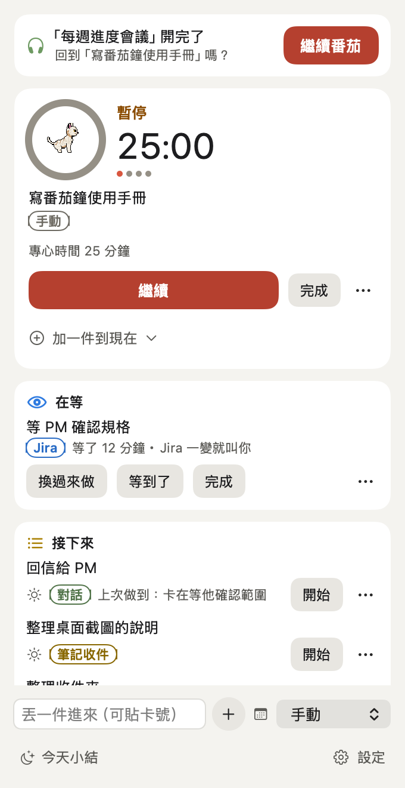
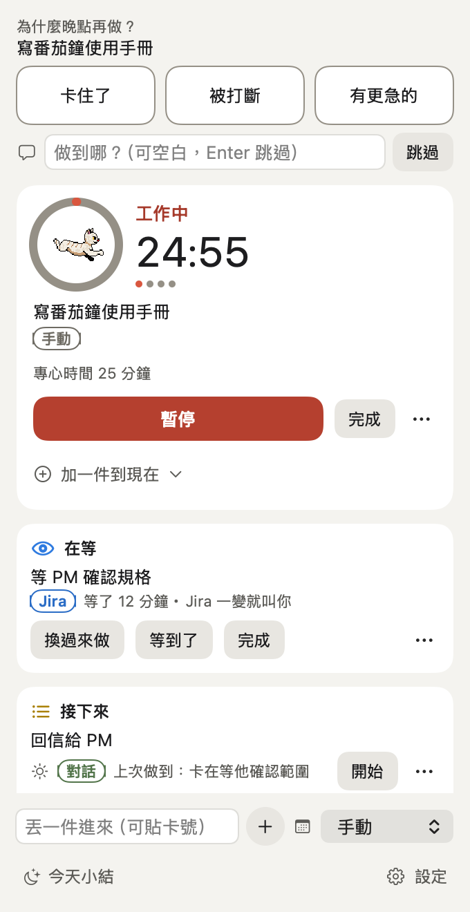
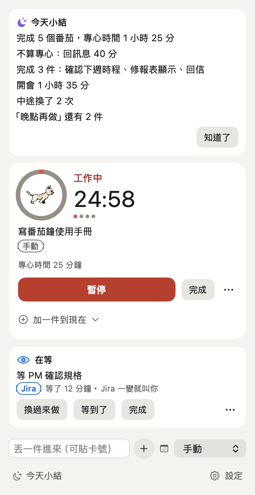
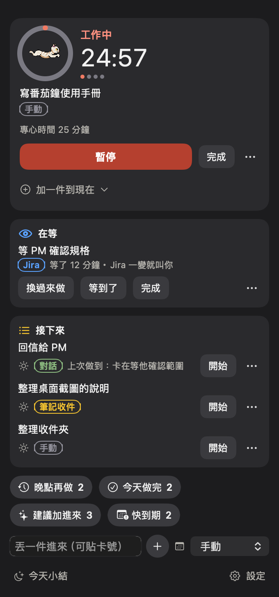
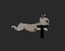
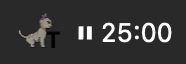
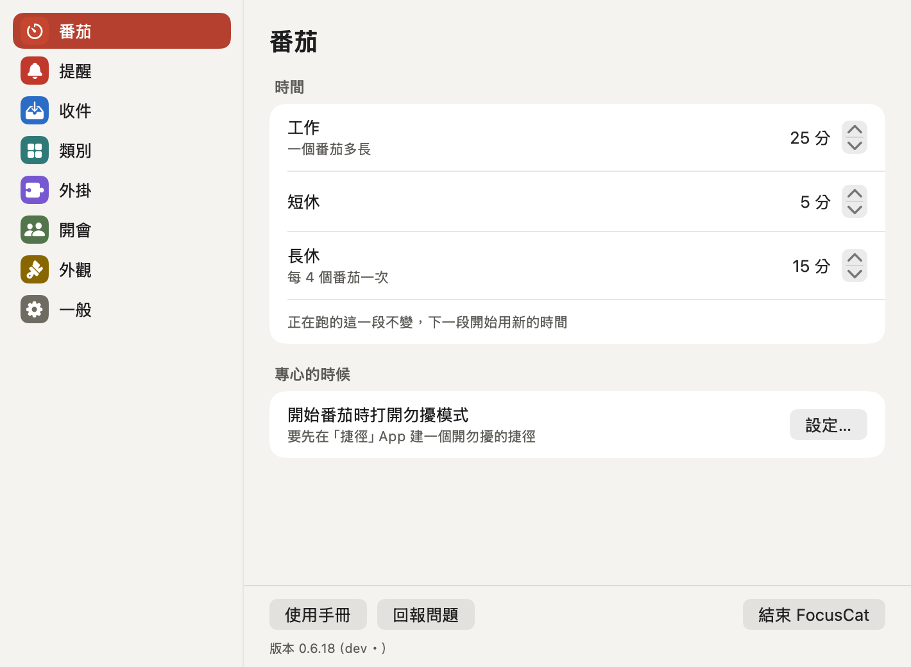
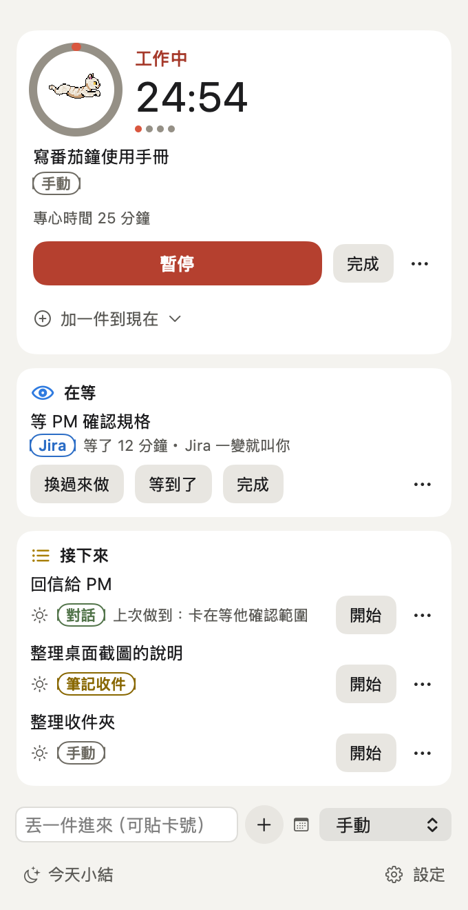
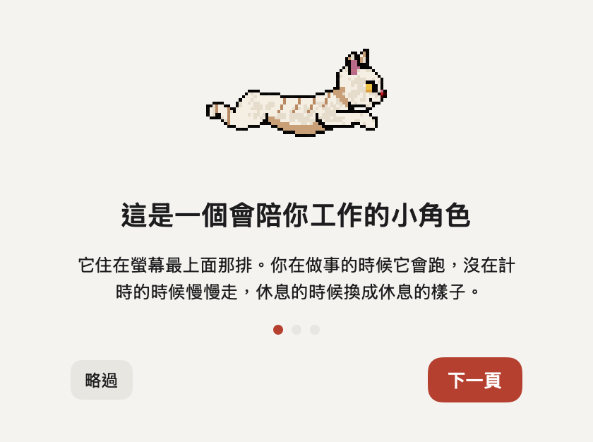
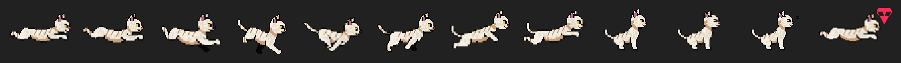
設定視窗
面板右下角的「設定」（或按 ⌘,）會開一個獨立視窗。左邊是側欄：番茄、提醒、收件、類別、外掛、開會、外觀、一般。點一項，右邊就換成那一頁。 按上下鍵也能換頁；游標在輸入框裡時，上下鍵照舊給輸入框。每一頁分成幾個圓角框，每一列左邊是名稱和一行說明，右邊是開關或按鈕。 關掉用 ⌘W。最底下那一行小字寫著版本與編譯時間——想確認手上跑的是不是新版就看那一行。
最底下那排按鈕有「回報問題」，用法見「回報問題」。 打包出去的版本，那排還會多一顆「☕ 請我喝咖啡」。
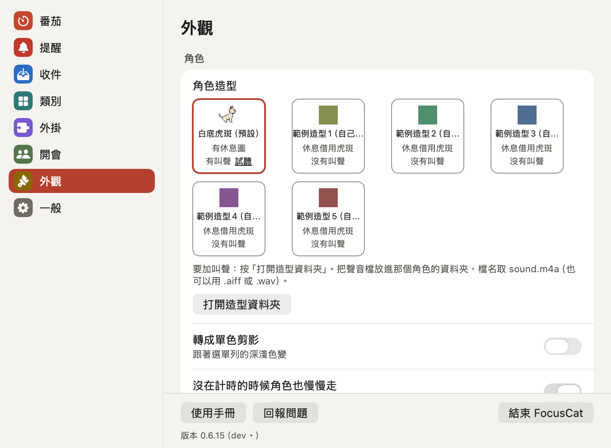
每個縮圖底下有兩行小字。第一行說的是休息時用哪一種圖：
| 寫著 | 意思 |
|---|---|
| 有休息圖 | 這款造型有自己的休息圖（或至少有睡覺圖），休息時用它自己的 |
| 休息借用虎斑 | 這款沒有休息圖也沒有睡覺圖，休息時借內建白底虎斑的 |
第二行寫「有叫聲」或「沒有叫聲」。有叫聲的格子旁邊有「試聽」，按了播一次，不會換掉你選的角色。
「休息時角色換成休息的樣子」關掉的話，休息時角色就跟工作時一樣在走。
滑鼠移上去
沒有底色的按鈕（「收起」「還有 N 件」「加一件到現在」、空心圖釘、太陽、「⋯」、設定側欄、外掛清單每一列），滑鼠移上去會多一層淺灰底，灰字變深，看得出可以按。 紅底、灰底的按鈕本來就看得出來，不變。
指標照 Mac 的習慣維持箭頭。只有會開網頁或文件的地方換成手指：看板上有網址的標題（同時加底線）、「怎麼做自己的外掛？」。「⋯」停一下會寫「更多動作」。
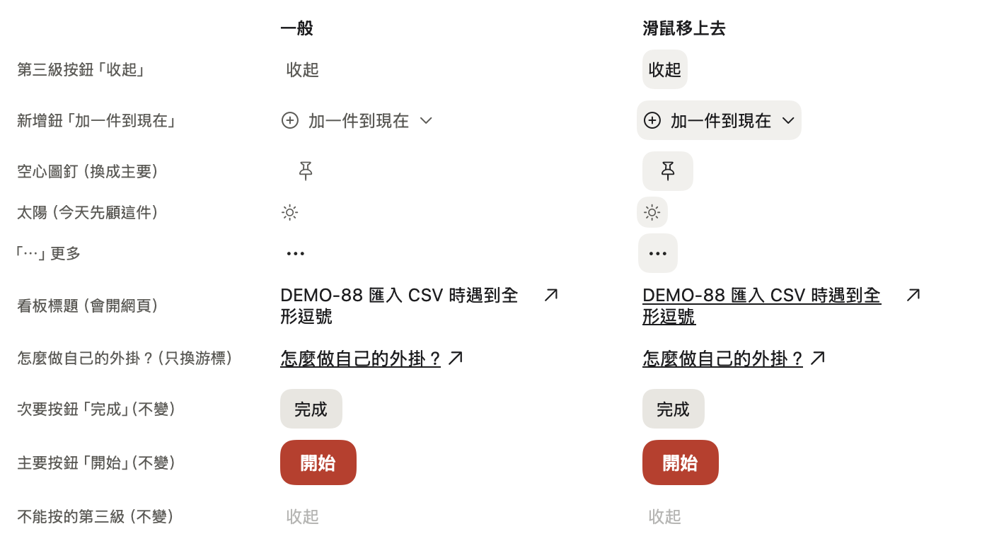
有新版的時候
GitHub 上出了比你手上新的版本，面板最下面（「今天小結」「設定」那排上面）會多一張小卡：「FocusCat 有新版 0.6.10」（版本號是舉例），底下一行寫你現在用的是哪一版。 它不跳通知、選單列也不多一個點，你打開面板才看得到。
- 下載、看更新內容：用瀏覽器打開 GitHub 上那一版的頁面。FocusCat 不會自己換掉自己，下載後照平常的方式裝。
- 這版先不要：卡片收掉，這一版不再提醒。原地留兩行字，第二行是「要反悔到設定 ▸ 一般。」下一版出來才會再出現。
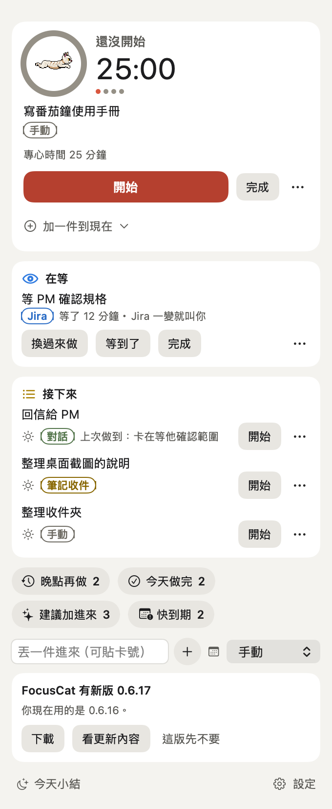
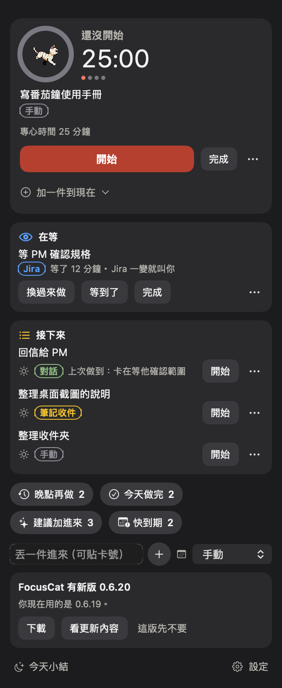
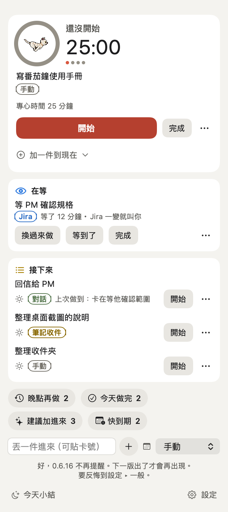
FocusCat 打開時看一次（上次查完不到 1 小時的話，等滿 1 小時再看），查到之後每天看一次；沒查到（例如沒網路）的話，1 小時後再試。只問 GitHub「最新版是幾號」，不會送出你的任何資料。
面板上不講「沒查到」，也不跳錯誤；原因寫在設定 ▸ 一般的「新版狀態」那一列，也記在 ~/Library/Logs/FocusCat/update-check.log。
不想要的話，到設定 ▸ 一般把「有新版時告訴我」關掉，關掉之後就完全不連網。
設定 ▸ 一般的「新版狀態」
「有新版時告訴我」底下那一列寫現在的情況：
- 有新版：「GitHub 上有 X，你用的是 Y。」底下寫什麼時候查的（例如「今天 14:02 查的。」），旁邊有「下載」「看更新內容」。
- 按過「這版先不要」：多一句「你按過「這版先不要」，面板不會提醒這一版。」按恢復提醒就反悔，面板那張小卡回來。
- 已經是最新版：寫「已經是最新版。」和查的時間。
- 沒查到：寫「上次沒查到（今天 14:02）。」、原因一句（連不上 GitHub、GitHub 上還沒有公開的版本、一小時內查太多次……）、下一次幾點自動再查。之前查到的新版不會因為這次沒查到就藏起來。
- 開關關著：寫「已關掉，不會連網。」，這時「檢查更新」不能按。
右邊的檢查更新按了馬上去問一次。查詢中按鈕變「查詢中…」；查完 1 分鐘內按鈕變淡，底下寫「剛查過，1 分鐘後可以再查。」（GitHub 一小時最多讓人問 60 次，這樣連按不會把自己鎖住）。 上次查的結果會存起來，重開 FocusCat 後這一列馬上有東西看；存起來的只有時間、查到沒有、版本號、那一版的網址和沒查到的原因一句。
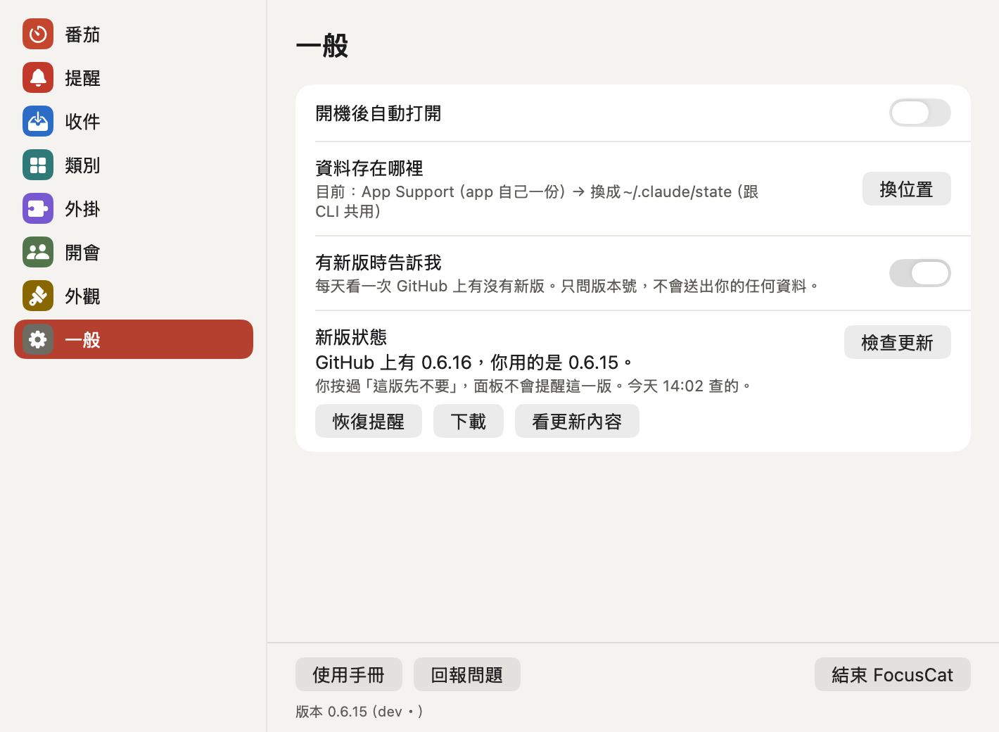
換角色
「設定 → 外觀 → 角色造型」內建一款白底虎斑。想用自己的圖就放進
~/Library/Application Support/FocusCat/skins/<名字>/，
資料夾裡放 run-1.png、run-2.png…（至少一張），想指定站著的樣子再加一張 sit.png；
放好之後那個名字就會出現在選單裡。
休息的樣子放 rest-1.png、rest-2.png…；沒放就用 sleep.png，兩種都沒有就借虎斑的。
張數多的造型不會變成慢動作：跑一圈的時間是固定的，張數多就每一格快一點。
要加叫聲：按「打開造型資料夾」。把聲音檔放進那個角色的資料夾，檔名取 sound.m4a（也可以用 .aiff 或 .wav），短短一聲就好。
再到「設定 → 提醒 → 提示音」選「角色的叫聲」。
圖太長太扁（寬超過高的 5 倍）、或讀不出來、或資料夾裡根本沒有 run-1.png 的，
會被跳過——不會靜靜消失：那個資料夾的名字連同原因（例如「圖太長了（100×10），選單列放不下」）
會列在造型格子下面，一看就知道要改哪一張。
預設保留原色。想要那種跟著選單列深淺色自動變的單色剪影， 就打開造型格子下面那一列的「轉成單色剪影」——每一款造型都有這個開關，內建那款也有， 各記各的，換造型不會互相影響。
內建那隻虎斑的圖是用兩支腳本產的（重上色、睡覺幀），腳本在原始碼 repo（目前沒有公開）的
pomodoro/scripts/skins/，想自己重產一份或改顏色可以直接拿去跑，用法寫在檔頭。
它把東西記在哪
「資料存在哪裡」是設定 → 一般底下的一個普通設定，只有兩個位置：app 自己的
~/Library/Application Support/FocusCat/，或跟 Claude 共用的
~/.claude/state/。選後者時 FocusCat 用的是
~/.claude/state/focus.db，跟 Claude 看到的是同一顆。
下面這幾張是剛裝好、資料放 App Support 的樣子（送給別人的那一份就長這樣）：
剛裝好的 FocusCat 不需要 node，自己記在
~/Library/Application Support/FocusCat/。要換位置就在設定裡按「換位置」，
app 會先問一次：兩邊各記各的，換過去看到的是那一邊的清單，這邊的東西不會跟著搬，
也不會不見，隨時可以換回來。
Jira 與其他外掛接不接得上，跟資料存在哪裡無關——那由每一支外掛 各自的開關決定，在設定 → 外掛。
設定 → 外掛分成兩層。第一層是清單，一支一列，照名字排。每一列寫這一支現在好不好：「還沒跑過」「09:30 跑過」「關著」，有問題時先寫問題。右邊的開關就是這一支開不開。
新電腦上清單是空的，寫著「還沒有外掛」。下面「可以加的外掛」有「Jira 我的卡」和「自動化工作」： 要用就按那一列的「安裝」，裝好它就出現在清單裡，開關已經打開。不用就不必理它，預設不會裝。 自己寫的外掛，按「新增外掛」那一列的「新增…」。也可以直接把外掛放進外掛資料夾，清單就會出現它；「外掛資料夾」那一列按「打開」就看得到那個資料夾。
點一列，進那一支自己的頁面。左上角「‹ 外掛」回清單。頁面上有：
- 啟用：跟清單上的開關是同一個。放進建議：關掉的話，那支照常跑，只是它的事不進建議清單。外掛關著時也能改，打開後才生效。
- 狀態：上一次自動跑得怎麼樣，右邊「試跑」馬上跑一次，結果寫在底下。按「試跑」不算自動跑過，所以試跑成功後它還是寫「還沒跑過」。
- 多久跑一次：第一項「外掛預設」寫出外掛自己定的時間，其他是固定的幾個選項，最慢「每天一次」。改了只影響這一支。指令列是
focus plugins interval <名字> <秒數>，reset回到預設。 - 類別：這支外掛的事算哪一類（見「類別與看板」）。
- 設定：外掛自己要填的東西（網址、開關、選一個、勾好幾個）。一行字改完按「存」，開關、選單和勾選一改就存好。
- 維護：「移除…」把外掛資料夾丟進垃圾桶、開關記成關，先問一次。卡片、你存的設定都不動。附帶的外掛跟這一版附的不一樣時，這裡還有「換成附的版本…」（見下面）。
第一次用 Jira 我的卡，要先給它 Jira 的帳號。還沒給的話，那一列會寫「讀不到：Jira env 缺（JIRA_URL／JIRA_USERNAME／JIRA_API_TOKEN）」。照下面做：
- 到 Atlassian 建一個 API token：id.atlassian.com/manage-profile/security/api-tokens，按「Create API token」。token 只顯示一次，先複製起來。
- 打開
~/.zshenv（沒有就新建一個），加這三行，換成你自己的值：export JIRA_URL="https://your-team.atlassian.net" export JIRA_USERNAME="you@example.com" export JIRA_API_TOKEN="剛剛複製的 token"
JIRA_URL是你們 Jira 的網址，要https://開頭。JIRA_USERNAME填你登入 Jira 用的 email。 - 結束 FocusCat（選單列的角色按右鍵 →「結束 FocusCat」），再打開。它只在打開時讀一次這三個值，不重開就讀不到。
- 到設定 → 外掛 → Jira 我的卡，在「狀態」那一列按「試跑」。紅字不見了就好了。
還是紅字的話，常見原因有兩個：三行寫在 ~/.zshrc，或改完沒重開 FocusCat。FocusCat 只讀 ~/.zshenv，寫在 ~/.zshrc 讀不到。
帳號和 token 只交給附帶的 Jira 外掛，別的外掛拿不到。
要收哪些 Jira 狀態，在 Jira 我的卡那一頁的「設定」：「收哪些狀態」按「讀取」，從 Jira 讀一次有哪些狀態，再勾。還沒讀時那一格寫現在用的是什麼，例如「現在：In Progress（預設）」。
「不收哪些狀態」沒設的話，只排除 Done。以前在舊版設定頁勾過的狀態，升上 0.6.2 會自己搬過來，那一格旁邊標「（從 0.6.1 搬來）」。
如果那一頁說存的設定讀不懂，按「清掉存的值」，舊版勾過的狀態會在那一刻搬回來。
指令列是 focus plugins settings jira options include_statuses（看有哪些狀態）與 set include_statuses '["in progress","in review"]'。
Jira 建議的名字也在那一頁改：「建議名稱的格式」填 {卡號} {標題}，建議就會變成「DEMO-1 卡片標題」；空著按「存」就回到只有標題。指令列是 focus plugins settings jira set title_format "{卡號} {標題}"。
想自己寫一支，見「自己寫外掛」。清單上寫「還沒跑過」就是還沒跑；跑了但失敗會寫「讀不到：」加原因，兩種不會混在一起。 開關開著卻掃不到那一支時，那一列會用紅字講（多半是那一支被移走或刪掉了）。
換成附的版本。附帶的 Jira、自動化工作裝好之後就是你的檔，FocusCat 升級時不會自己換。
這一版附的跟你裝的不一樣時，清單那一列寫「附的版本不同」。點進去，在「維護」按「換成附的版本…」，確認框會寫舊的搬到哪。
舊的整份改名留在外掛資料夾（例如 jira.bak-focuscat-20261004-093015），開關和你存的設定都照舊。你自己改過的外掛也能換。
指令列是 focus plugins install <名字> --replace。
升級後面板會先講。升級 FocusCat 之後，附帶的外掛跟這一版附的不同，面板上面那張卡會多一段橘字，一支一段。不會自己換。
- 「換成附的版本…」：跟設定頁那顆一樣，先問一次。舊的整份留成備份，開關和存的設定照舊。
- 「不用了」：這一版不再問。下次升級還不同的話會再問一次。
- 你自己改過的外掛也會出現這一段。換了的話，你改的地方會被蓋掉，要找回來去備份拿。
還沒換的舊 Jira 外掛也收得到你在新頁面勾的狀態。「試跑」和設定頁會多一句灰字「舊版外掛照樣收得到；按「換成附的版本…」之後就能改。」，那不是問題，不用 unset。換成附的版本就沒了。
一鍵安裝到 Claude Code
想讓 Claude 看得到、改得動 FocusCat 裡的清單，要在 Claude Code 裝一小包東西：focus 指令、
focuscat 指令、專注提示的 hook（連同它用到的兩支小程式）、一份 skill，0.6.10 起還有輸入框上方的番茄那一行（見下面）。0.5.0 起這一包不再帶外掛，外掛由各人自己加。app 裡已經帶著這一包，不用跑 install.sh：
- 先把 FocusCat 拖進「應用程式」。直接從下載的地方打開的話，設定裡會多一行提醒你先拖過去。
- 點角色 → 設定 → 外掛，往下捲到「Claude Code 套件」。
- 按「安裝…」（還沒安裝時只有這一顆按得下去）。確認框會列出要寫幾個檔、寫到哪裡、
settings.json要加哪一段、原檔備份在哪。按「安裝」。 - 裝好之後狀態那一列寫「已安裝」加版本號。之後新開的 Claude Code 對話就用得到。
輸入框上方的番茄那一行（0.6.10 起）：裝好套件之後，新開的 Claude Code 對話在輸入框上方多一行，例如「🍅 番茄 12:30 · 寫規格」：番茄還剩幾分、你正在做哪一件。休息時寫「休息 4:10」，暫停時前面多「暫停 ·」，沒在計時就不顯示。FocusCat 沒開、被強制結束（狀態檔超過 90 秒沒更新），或狀態檔讀不到時，這一行是灰字「讀不到番茄狀態」，不會留著舊的倒數，不會擋住你打字。系統時間往回調過時，狀態檔記的時間會比現在晚；晚 5 秒以上也算讀不到。FocusCat 開著的話，大約 30 秒內它寫下一次狀態，這一行就恢復。打 /focus-panel 會打開番茄面板，列出你現在在做的幾件，每件旁邊有「完成」，按了會再問一次「確定完成？」。這一行只讀 FocusCat 的狀態檔，不改任何東西。
在等你按開始時（0.6.16 起）：工作段做完還沒按「開始休息」，這一行換成黃色粗體「⏰ 該休息了 · 到 FocusCat 按「開始休息」」；休息走完還沒按「開始」，寫「⏰ 休息完了 · 到 FocusCat 按「開始」」。等超過 1 分鐘會加「（等了 N 分鐘）」。按了開始就回到平常的倒數。「沒按開始時再提醒」關掉、或今天按過「今天不再提醒休息」（只影響該休息了那一種）時不顯示。FocusCat 還是舊版時沒有這個資訊，這一行跟以前一樣。
- 不用改
settings.json。套件把它放在~/.claude/skills/focuscat-band/（裝在別的設定資料夾時就在那個資料夾的skills/底下），Claude Code 開新對話時自己會載入（在/plugin裡叫focuscat-band@skills-dir）。已經開著的對話要重開才看得到。 - 關掉：在終端機跑
claude plugin disable focuscat-band@skills-dir，或在 Claude Code 裡打/plugin找到 focuscat-band 停用。下一個對話起就不顯示，套件更新也不會再打開它。要打開回來就把disable換成enable。這兩個做法都是 Claude Code 自己在settings.json記一筆「關著」，FocusCat 不碰。 - 不想留這幾個檔，也可以直接刪掉
~/.claude/skills/focuscat-band。套件更新時不會裝回去，跟其他你刪掉的檔一樣列在「你刪掉的檔，不會裝回」。
依據：mods/focuscat-band/hooks/band.mjs（這一行寫什麼、讀不到時那句、狀態檔位置照 FOCUSCAT_STATE、focus 指令照 CLAUDE_CONFIG_DIR 找）、pomodoro/Sources/PomodoroCore/ClaudeConfigFolders.swift（好幾個設定資料夾的規則與字）、mods/focuscat-band/hooks/register.tsx（每秒重讀、/focus-panel）、launchd/kit-files.txt（套件帶哪幾個檔）。改了那裡要改這裡。
裝好之後 Claude 會怎麼配合你：你每次送訊息給 Claude Code，套件會先在背後告訴它幾件事。你不用多講。
- 你現在在做哪一件，這件拿在手上幾分鐘。同時在做好幾件時，它知道全部是哪幾件。
- 番茄還剩幾分鐘。番茄在跑時，它知道「現在在番茄中，還剩 N 分鐘」。休息時是「現在是休息時間」，暫停時是「番茄暫停中」。
- 沒有番茄在跑時提醒你。FocusCat 開著但沒有在計時，它會在回覆開頭用一行提醒你，並問要不要幫你按「開始」。你在那段對話裡說好，它才會按；之前說過好的不算。這句最多每 20 分鐘講一次，不會每句都講。剛關掉 FocusCat 時不提醒。0.6.16 起講得更準：工作段做完、還沒按開始休息時，它提醒「該休息了」；休息走完、還沒按開始時，它提醒「休息完了」。這個提醒預設關閉：要打開，到「設定 → 外掛 → Claude Code 套件」打開「沒在計時時提醒我」，關掉就不再提醒。以前用
touch ~/.claude/state/focuscat-idle-reminder.on打開過的話，升級後這個開關就是開著的，不用重設。 - 你要它做別件事時，它第一句先問你。手上只有一件：要換過去，還是先記到晚點再做？換的話會問原因：被打斷、卡住，還是有更急的。 手上有好幾件：要換掉其中哪一件、加進來一起做，還是先記到晚點再做？
- 講的是同一件就不問。你提到那件的卡號，或打出它完整的名稱（至少 4 個字），它就知道是同一件。
- 你說好了它才動。附的 skill 要它先在對話裡講清楚、等你這一次說好，才去換事情、開始或暫停番茄。你叫它記一件事，它可以直接丟進「接下來」。
讀不到就不講，也不會擋住你送出的訊息。FocusCat 沒開、超過 90 秒沒更新、記的時間比現在晚 5 秒以上（系統時間往回調過），或狀態讀不懂，就不講番茄那一句。 問不到你在做哪一件，就不講那一句。
依據：hooks/focus-context.py（專注那句、要換時怎麼問、怎樣算講到同一件、讀不到不擋）、hooks/pomodoro_state.py（番茄那句、90 秒、晚 5 秒 FUTURE_TOLERANCE_SECONDS、沒有番茄在跑那句、20 分鐘 IDLE_REMIND_SECONDS 與開關檔 IDLE_OPT_IN_NAME）、docs/skills/focuscat/SKILL.md「規矩」（先問過才動）。改了那裡要改這裡。
之後 app 換新版，打開時會自動更新套件，面板上講一行「Claude Code 套件已自動更新到」加版本號。這是「有新版就自動更新」那個開關管的，預設開著。
自動更新只換檔，不動 settings.json。Claude Code 的使用者設定裡沒有專注提示的話（例如你自己拿掉了那條 hook），面板警告區會一直講「使用者設定裡沒有專注提示；接在專案設定裡的看不到。」：FocusCat 只看使用者設定，接在某個專案設定裡的它看不到，所以不說成「沒接上」。旁邊有兩顆按鈕：
- 接回去：只把提醒登記回
settings.json，寫之前先備份原檔，不換任何檔。接好那一行就不見了。 - 不用了：記住你不要，之後不再講。
這裡（設定 → 外掛 → Claude Code 套件）也有同樣兩顆。按過「不用了」的話，這裡留一行「已選擇不接專注提示」和「接回去」，想改回來就按它。
settings.json 是 symlink、開頭有 BOM、有註解或尾逗號，也照樣看得出專注提示有沒有接上。真的看不懂（例如格式壞掉）時，改講「看不懂 settings.json，沒辦法確認專注提示有沒有接上。」，只有「不用了」一顆：這種檔按「接回去」一定失敗。
自動更新沒成功的話，面板警告區會寫原因，到這裡按「更新…」再試一次。把開關關掉的話，狀態那一列底下會多一行「有新版」，面板上也會提醒一行，按「更新…」才換。第一次安裝一定要自己按；用 install.sh 裝的（開發者模式）不會自動更新。
- 你改過的檔不會被蓋掉。自動更新也一樣，面板那一行會列出這幾個檔。更新時會列在「你改過的檔（不會覆蓋）」底下；真的要換成新版，
按「這幾個也用新版（舊的備份）」，舊的會另存成
<檔名>.bak-focuscat-<時間>。 - 你刪掉的檔不會被裝回去。更新（自動或手動）都不會把它放回來，這一區多一列「你刪掉的檔，不會裝回」寫出是哪幾個；按「裝回來」只寫回這幾個，不另外問，其他檔不動。更新的確認框也會多一句「你刪掉的 N 個檔不會裝回。」
你刪掉的檔列在這裡（假套件） - 專注提示小程式不見了。如果你刪了
focus-context.py，Claude Code 的設定卻還記著每次先跑它，之後每次送訊息給 Claude Code 都會被擋下。這一區會用紅字講這件事，面板警告區也會講一行「專注提示小程式不見了。不處理的話，每次送訊息給 Claude Code 都會被擋下。」兩邊都有兩顆按鈕：「裝回來」只把那個檔放回去；「拿掉那條設定」先備份settings.json再拿掉 app 加的那一條，之後 Claude 就不會知道你在做哪件事。設定頁這樣講（假套件） 面板也講一行（假資料） settings.json只加一條 hook，寫之前先備份。整份會重新排版，內容不變。 它讀不懂（例如裡面有註解）的話一個字都不改，改成顯示那幾行讓你自己貼，旁邊有「複製這幾行」。- 以前一起裝的外掛留給你。0.4 以前的套件會順便裝幾支外掛。更新套件或按「移除…」時，這幾支都不刪，留在外掛資料夾，以後由你自己管。確認框會講是哪幾個檔。
- 不要了就按「移除…」：只刪 app 裝的、而且你沒改過的檔；改過的留著並列出來。以前一起裝的外掛不刪。
- 用
install.sh裝過的機器（開發者模式），這一區會寫「這台用 install.sh 裝過（開發者模式），app 不動這些檔」，按鈕全灰。
裝好之後，資料放 App Support 的人用 Claude 跑 focus now，讀到的也是 app 那一顆，不會是空的。
用 ~/.claude 以外的資料夾
Claude Code 平常把設定和對話紀錄放在 ~/.claude。有人會多開一份，例如工作用一份、自己用一份。FocusCat 的套件要裝進你用的那個資料夾，那邊的 Claude Code 才用得到（0.6.17 起）。照順序做兩步。
第一步：讓 Claude Code 用另一個資料夾。在終端機打這一行，例子裡的資料夾叫 ~/.claude-work：
CLAUDE_CONFIG_DIR=~/.claude-work claude
CLAUDE_CONFIG_DIR 是 Claude Code 自己認的設定，意思是「這次用這個資料夾」。第一次這樣開，Claude Code 會請你登入，因為每個資料夾各記各的登入。之後設定和對話紀錄都存在那個資料夾。開過一次，FocusCat 就認得它，可以做第二步了。
每次都打這麼長很累。可以在 ~/.zshrc 最後加一行：
alias claude-work='CLAUDE_CONFIG_DIR=~/.claude-work claude'
新開一個終端機視窗，之後打 claude-work 就是用這個資料夾；打 claude 還是用 ~/.claude。
第二步：在 FocusCat 加進來並安裝。點角色 → 設定 → 外掛，往下捲到「Claude Code 套件」。
- 家目錄裡有別的
.claude開頭、看起來是 Claude Code 設定的資料夾，會列在最後一組，旁邊一顆「加入」。按「加入」。 - 沒列出來的話，按「加入資料夾…」自己選。選的資料夾裡要有
settings.json或projects，不然不加，並說原因：那表示 Claude Code 還沒用過它，回第一步用它開一次 Claude Code 再加。 - 加進來的只是清單，還沒裝任何東西。多出來的那一組寫著是哪個資料夾，例如「Claude Code 套件：~/.claude-work」。按那一組的「安裝…」。
裝好之後：
- 每個資料夾一組，各管各的。每一組有自己的狀態和「安裝…」「更新…」「移除…」，只動那個資料夾。移除其中一個，另一個不受影響。
- 捷徑不算另一個資料夾。捷徑（替身）指到清單裡已經有的資料夾，不會加進來：那其實是同一個資料夾，兩組會互相拿掉對方的檔。
- 從清單拿掉。還沒裝套件的資料夾，那一組會多一列「不用在這裡裝？」和「從清單拿掉」。拿掉只是不再列在這裡，資料夾裡的東西都不動。裝著套件的要先按「移除…」。清單至少留一個。
- 兩個開關大家共用。「有新版就自動更新」對每個裝了套件的資料夾都算；「沒在計時時提醒我」也只有一個。番茄狀態全機只有一份，每個資料夾的套件讀的都是同一份。
- 面板上的提醒只有一行。某個資料夾的專注提示沒接上，面板講的是那一個；按「接回去」也是接回那一個。
依據：Claude Code 官方文件 Environment variables 的 CLAUDE_CONFIG_DIR（換掉預設的 ~/.claude，設定、對話紀錄、外掛都存在那裡，alias claude-work 那一行照抄它的例子）、Authentication（每個資料夾各有自己的登入）；2026-10-14 查。FocusCat 這邊：pomodoro/Sources/PomodoroCore/ClaudeConfigFolders.swift（好幾個設定資料夾的規則與字）。改了那裡要改這裡。
要你自己按的系統詢問
- 通知：第一次啟動會問。沒給的話面板上會一直提醒你沒給。
- 行事曆：不會問。開會偵測讀的是你在「設定 → 開會」貼的網址，不是 Mac 的行事曆 App，所以不需要權限。
- 麥克風：偵測「麥克風有沒有被佔用」不需要錄音權限，但系統可能還是會問一次。
- 開機後自動打開：設定 → 一般 裡打開，系統會請你確認。
3. 自己寫外掛
什麼時候用：想讓建議清單也列出別的地方的事（某個檔、某個網站、某支指令的輸出）外掛是一支小程式。FocusCat 定時叫它，它回一份清單，清單裡的事就會出現在面板的建議清單。 正式版附的 Jira 也是一支外掛（設定 → 外掛「可以加的外掛」按「安裝」才會裝）。
自己寫一支只要四步，格式與權限不用自己記。
不寫程式也可以：設定 → 外掛清單最下面有「怎麼做自己的外掛？」，會用瀏覽器打開 FocusCat 裡附的教學。
裡面有三段可以直接複製給 Claude Code 的指令：做一支新的、幫它加一個設定、讓你的腳本出現在自動化看板。
請 Claude Code 寫外掛時，叫它先跑 focus plugin-guide：這條指令會印出給 AI 看的外掛規格（--path 印檔案在哪），不用你自己複製貼上。
每一步在 app 裡都做得到，不用開終端機。想用指令列的 focus 也可以，
它是「一鍵安裝到 Claude Code」那一包裝進來的，還沒裝的話先裝。
第一步：建範本
到設定 → 外掛，在「新增外掛」那一列按「新增…」，填名字按「建立」。 建好會直接打開那個資料夾，那一列也馬上出現在清單裡。指令列是：
focus plugins new mine
mine 換成你要的名字：小寫英文開頭，只能用小寫英文、數字、_ 和 -。
指令會印出建在哪裡、下一步做什麼：
$ focus plugins new mine 建好外掛 mine（~/.claude/focus-plugins/mine） plugin.json 名字、標題、多久跑一次 run.mjs 程式本體：打開它，改「改這裡」那一段 它預設是關著的。下一步： 1. focus plugins check mine 確認跑得起來、輸出形狀對 2. focus plugins enable mine 打開它，候選就會進建議清單 （或在 FocusCat 的設定 ▸ 外掛點進它的頁面，按「試跑」）
建好的外掛是關著的。同名的已經有了就不動，不會蓋掉你改過的檔。
第二步：改「改這裡」那一段
打開那個資料夾裡的 run.mjs。設定 → 外掛「外掛資料夾」那一列的「打開」會直接開到上一層。
範本長這樣，要改的只有 ── 改這裡 ── 底下那幾行：把 candidates 換成你真正要列的事。
#!/usr/bin/env node
// mine：FocusCat 外掛範本（focus plugins new 產生的）。
// 核心從 stdin 送一行 JSON 進來（contract／now／today／settings），這支要在 stdout 回一份 JSON。
// 讀不到來源時：exit 非 0，並在 stderr 寫一句人話——不要印一份空的候選然後 exit 0。
// 除錯訊息寫到 stderr（console.error）；stdout 只能有那一份 JSON。
// 改完跑 focus plugins check mine，會一條一條告訴你哪裡不對。
let raw = '';
process.stdin.on('data', (chunk) => { raw += chunk; });
process.stdin.on('end', () => {
const request = JSON.parse(raw || '{}');
if (request.contract !== undefined && request.contract !== 1) {
console.error(`看不懂 contract ${request.contract}`);
process.exit(4);
}
// ── 改這裡 ── 換成你真正要讀的東西（檔案、API、指令的輸出……）。
// 每一件的 key 一定要寫成 "mine:<你自己的 id>"，不然會被丟掉。
const candidates = [
{ key: 'mine:sample', title: 'mine 的範例：打開 run.mjs 換成真的資料' },
];
process.stdout.write(JSON.stringify({ contract: 1, candidates, excluded: [] }));
});
- 每一件的
key一定要寫成「外掛名字＋冒號＋你自己的編號」，例如mine:42。 title是面板上顯示的字。- 讀不到東西時，不要回一份空的清單。用
process.exit(1)結束，再用console.error寫一句原因—— 這樣 FocusCat 才分得出「壞了」和「今天沒事」。
plugin.json 通常不用動。
第三步：試跑
到設定 → 外掛，點你的外掛進它的頁面，在「狀態」那一列按「試跑」。跑完底下會多一行： 成功寫「成功，拿到 N 件：」加前幾件的標題，失敗寫原因和怎麼修。 成功但有提醒時，提醒接在後面，例如還沒打開的會寫「提醒：還沒開，候選不會進建議清單」。
想看完整的檢查，在終端機跑 focus plugins check mine。它一條一條查，每條一行：
✓ 是過了、! 是提醒、✗ 是錯（下面多一行「怎麼修」）。「試跑」跟這條指令查的是同一份，結果一樣。
外掛成功了、但在 stderr 留了話，會多一條提醒，原樣講出第一行。
成功的樣子。最後那條「還沒開」是提醒，不是錯，第四步就會打開它：
$ focus plugins check mine
檢查外掛 mine（~/.claude/focus-plugins/mine）
✓ 外掛資料夾在
✓ plugin.json 讀得懂，必填欄位都在
✓ run 檔在：run.mjs
✓ 用 node 跑，run 檔不需要可執行位
✓ 權限沒問題（別人改不動這幾個檔）
✓ 找得到 node：~/.nvm/versions/node/v20.20.1/bin/node
✓ 沒有宣告 env
✓ 試跑成功（結束碼 0）
✓ 輸出形狀對，拿到 1 件：mine 的範例：打開 run.mjs 換成真的資料
! 還沒開，候選不會進建議清單
怎麼修：focus plugins enable mine（或在設定 ▸ 外掛打開它）
結論：跑得起來，但有 1 個提醒（標 ! 的那幾條）
失敗的樣子（key 忘了加 mine:）。照「怎麼修」那行改完，再跑一次：
$ focus plugins check mine
檢查外掛 mine（~/.claude/focus-plugins/mine）
✓ 外掛資料夾在
✓ plugin.json 讀得懂，必填欄位都在
✓ run 檔在：run.mjs
✓ 用 node 跑，run 檔不需要可執行位
✓ 權限沒問題（別人改不動這幾個檔）
✓ 找得到 node：~/.nvm/versions/node/v20.20.1/bin/node
✓ 沒有宣告 env
✓ 試跑成功（結束碼 0）
✗ 1 筆候選的 key 不是 mine:<id>（sample）
怎麼修：每一筆的 key 寫成 "mine:<你自己的 id>"
! 還沒開，候選不會進建議清單
怎麼修：focus plugins enable mine（或在設定 ▸ 外掛打開它）
結論：有 1 個問題要先修，修好再跑一次 focus plugins check mine
focus: 外掛「mine」檢查沒過：有 1 個問題（每一條的怎麼修印在上面）
第四步：打開
在設定 → 外掛，把那一列的開關打開（或在它的頁面打開「啟用」），「放進建議」保持勾著。
之後它回的事就會出現在面板的建議清單，排在內建那幾支後面，標題右邊的小標籤寫外掛的名字。
指令列是 focus plugins enable mine。
只想讓它照常跑、不要進建議清單，就取消「放進建議」（指令列是 focus plugins suggest mine off）。
讓外掛有自己的設定
外掛要你填網址或開關的話，在 plugin.json 加一段 settings：
"settings": [
{"key": "endpoint", "label": "網址", "type": "text"},
{"key": "strict", "label": "嚴格模式", "type": "toggle", "default": false},
{"key": "team", "label": "組別", "type": "select", "options": ["甲", "乙"], "default": "甲"}
]
那一支頁面的「設定」組就會多出這三格。一行字打完按「存」；開關與選單一改就存好。
自己改過的那一格旁邊有「用預設值」，按了就回到 default。
一行字的框只顯示你存過的值，空著時灰字寫「預設：…」；空著按「存」＝回到預設（等同 unset）。
沒填值的開關旁邊會寫「沒設定，不會送」。
勾好幾個（多選，0.6.2）："type": "multi"。選項可以寫死，也可以由外掛讀一次給：
{"key": "days", "label": "提醒哪幾天", "type": "multi", "options": ["週一", "週二", "週三"], "default": ["週一"]},
{"key": "labels", "label": "收哪些標籤", "type": "multi", "options_from": "plugin",
"default": [{"value": "in progress", "label": "In Progress"}]}
寫死的那種，打開就是一排勾選框。options_from 的那種，要按「讀取」：FocusCat 叫你的外掛讀一次有哪些選項，讀到就變成勾選框，勾一下就存好。
- 存過、但這次沒讀到的值不會消失：照樣列在最後、勾著，標「（沒讀到）」。
- 讀不到時寫紅字原因，可以自己打，用逗號隔開，按「存」。
- 全部取消＝一個都不收，畫面會用橘字講明。「用預設值」拿掉你的選擇。
default可以寫成{"value", "label"}：送給外掛的是 value，還沒讀選項時畫面寫 label，例如「現在：In Progress（預設）」。
外掛讀選項那一次，請求裡多一欄 "trigger": {"type": "options", "key": "labels"}，要回 {"contract": 1, "options": […]}。寫法見 外掛規格 plugins.md「讀一次選項」。
外掛每次跑的時候，會在收到的請求裡多一欄 plugin_settings，裡面就是這幾格的值。
沒填、也沒有 default 的那一格不會出現。指令列也可以改：
focus plugins settings mine # 看現在的值 focus plugins settings mine set strict on # 改一格（開關只收 on／off） focus plugins settings mine set labels '["In Progress","Review"]' # 多選只收 JSON 陣列；'[]'＝一個都不收 focus plugins settings mine options labels # 叫外掛讀一次選項 focus plugins settings mine unset team # 回到預設值（一行字不能 set 成空字串，要用 unset） focus plugins settings mine reset # 這一支存的值全部清掉
你改過 plugin.json（例如拿掉一個選項）之後，原本存的值可能對不上。
對不上時這支外掛先不跑，免得它拿預設值替你做事。外掛清單那一列會用紅字寫是哪一格、存的是什麼，旁邊有「去重選」。
點進去重新選一次，或按「用預設值」，它就會照常跑。
設定存在 FocusCat 的資料庫裡，換「資料存在哪裡」時會跟著資料走。
Jira 的帳號和 token（JIRA_USERNAME、JIRA_API_TOKEN）只交給附帶的 Jira 外掛，別的外掛在 env 要了也拿不到。
查 Jira 時只連 https:// 開頭的網址，連線的程式只拿到 PATH 和代理設定。錯誤訊息裡的 token 和代理帳密會遮掉。
其他變數，外掛要了就給。所以裝別人寫的外掛之前，先看一下它的 env 要了哪些東西。
外掛跑得比 2 秒慢也沒關係。面板不會等它：FocusCat 開著時會照 plugin.json 的
interval_seconds 在背景跑它，最多等 timeout_seconds 那麼久。還沒更新完的那一下，
面板先用上一次成功的結果。只有從來沒成功過、或上一次就失敗了，才會顯示原因。
外掛的類別、狀態、按鈕和文字（0.6.1）
候選除了 key、title，還可以帶一行說明（detail）、網址（url）、狀態字（status）和按鈕（actions，最多 4 顆，只有打開網址、內建動作、交回外掛三種）。
plugin.json 可以寫 default_category 建議放哪一類，或宣告它要的類別。
kind: "insight" 是文字外掛：回一段文字而不是事情。欄位與規則寫在 外掛規格 plugins.md 的「類別」「狀態與按鈕」「文字外掛」幾節。
常見的錯誤
| 檢查時看到 | 怎麼修 |
|---|---|
| ✗ plugin 檔別人也能改，不跑（run.mjs） | 檔案權限太寬，FocusCat 為了安全不跑它。照「怎麼修」那行跑 chmod go-w "<那個檔>"。 |
| ✗ 試跑失敗：超過 … 秒還沒回應 | 跑太久。把 plugin.json 的 timeout_seconds 調大（「怎麼修」那行會寫現在幾秒、上限多少），或讓它跑快一點，例如先把結果存成檔，外掛只讀那個檔。 |
| ✗ 1 筆候選的 key 不是 mine:<id>（sample） | key 少了外掛名字。改成 mine:<你的編號>。寫錯的那幾筆會被丟掉，寫對的照常進來。 |
更細的規則——FocusCat 送進來的請求有哪些欄位、怎麼讀 token 這類環境變數、多久跑一次、跑太久會怎樣、
check 每一條查什麼——寫在外掛規格 plugins.md「怎麼寫一支 plugin」。
4. 每天怎麼用
全部從選單列的角色開始。點一下打開面板，做完事情點旁邊任何地方就收起來。
面板最下面只有兩個文字按鈕：左邊「今天小結」、右邊「設定」。縮小版沒有這一排。使用手冊、回報問題、結束 FocusCat 都在設定視窗最底下（選單列的角色按右鍵也有「設定…」與「結束 FocusCat」）。「回報問題…」在「現在」那張卡右上的「⋯」最下面也有一個。
選一件開始
什麼時候用：手上沒有在做的事，要開始下一件上面那張卡寫「還沒挑，從下面點一件」時，代表現在沒在做任何一件。 清單是空的時候（例如剛裝好），它會改寫「清單是空的，從最下面那一格丟一件進來」。
「接下來」與「建議加進來」每一列右邊都有一顆「開始」，按了就開始做它；標題本身點了不會怎樣。 「建議加進來」平常收成一顆膠囊「建議加進來 N」，跟「晚點再做」「今天做完」「快到期」排在同一排，點了才展開； 每一列的「⋯」裡有「加到接下來」，先排進來、晚一點再做。
這時候主按鈕寫「開始計時（不指定事情）」：按了只開始計時，不會替你挑一件。番茄鐘與專注的事是分開的， 可以只專注不計時，也可以只計時不指定做哪一件。
換一件
什麼時候用：做到一半被打斷、卡住了、或有更急的事這兩項在「現在」那張卡右上「⋯」選單的最上面：
- 換一件：這件等一下再做，先換下一件（回到「接下來」）。
- 晚點再做：這件今天先不碰，放進「晚點再做」。放完會問「為什麼晚點再做？」， 下面三個原因「卡住了」「被打斷」「有更急的」可以挑一個（再按一次就取消，不挑也行），再留一句「做到哪？」。 按 Enter 就過，那一格不會自己消失（0.6.10 起；以前只有一個「卡住了」小勾）。
同一個「⋯」選單裡還有「預計幾個番茄」「改名稱」「在等」「跳過這段」「重新計時…」。最下面隔一條線是「回報問題…」；手上沒事時，選單裡只剩「跳過這段」「重新計時…」和「回報問題…」。 「重新計時…」會把這一段倒數歸零，所以按了會先問一次，按「重新計時」才算數，按「不要」什麼都不動。
選完面板上會說一句結果（「已放到晚點再做」或「先換到：⋯」），不用自己猜有沒有生效。
換走時它會問你「做到哪了」，留一句就好（不想留就按跳過）。 這一格不會自己消失，留到你按 Enter、跳過或 Esc 為止。 點面板外面、點選單列的角色關掉面板時它還在，打到一半的字也還在，回來可以接著打。 還沒收起就又換了一件的話，上一件那一格會先照當時的樣子記下來（打的字、挑的原因都記在上一件），再換成新的空白格。 下次回到這件事，那句話會顯示在標題底下。
被打斷的事，下次會以「做到一半」排在建議前面。
想直接換到「接下來」、「晚點再做」或建議裡的某一件，按那一列的「開始」，按下去就換過去，不用再按一次。 換完，選單列角色底下會跳一個小視窗：
- 最上面寫「✓ 已經換成「…」」，下面問「「原本那件」為什麼先放下？」。
- 三格並排，每格底下寫會發生什麼：有更急的（回到接下來）、被打斷（回到接下來）、卡住了（放到晚點再做）。預設是「有更急的」。選了的那一格是紅框，右上角有一個勾。
- 「做到哪？（可空白）」：留一句，下次回到那件事時會顯示。這個流程只問這一次，面板上不會再跳「做到哪？」那一格。
- 記下來（Enter，按鈕上標著 ↩，紅色、在最右邊）：照你選的記。選「卡住了」，原本那件會從「接下來」搬到「晚點再做」。
- 點小視窗以外的地方（包括又按了另一件的「開始」）：跟按「記下來」一樣，照你當下選的原因和打的字記下來。沒動過就是預設。注音還在選字時點別處不算，小視窗會留著。
- 略過（Esc，按鈕上標著 esc）：照預設，原本那件在「接下來」，打的字不要了。
- 放著不管：換已經發生了，不用等你回答，也不會卡住任何事。小視窗留著，你下次點別的地方時，照當時選的和打的記下來。
- 記不進去的時候（例如那件剛好被別的地方移走了），小視窗會留著，選的原因和打的字都還在，上面寫原因。
- 換回去（按錯的時候）：整個撤銷。剛換過去的那件回到原本的位置（從「晚點再做」開始的，放回去時照舊是原本放進去的時間；從「在等」開始的回到「在等」，開始等的時間、到了沒都照舊），原本那件回到手上，計時接著跑。只有小視窗還開著時才有；關掉之後要換回去，就再按一次那件的「開始」。
鍵盤：一打開游標就在「做到哪」，打字直接進去；「做到哪」還沒打字時按 ← → 換原因。 小視窗還開著又按了另一件的「開始」：前一個照你當下選的原因和打的字記下來（跟按「記下來」一樣，沒動過就是預設），換成新的小視窗。 用快捷鍵、指令列或 Claude 換的時候本來就會帶原因，不會跳這個小視窗。
晚點再做
什麼時候用：這件今天不做了，但不想忘記在「⋯」選單按「晚點再做」。要拿回來就點下面那排的「晚點再做 N」膠囊，每一列右邊有三顆： 「拿回接下來」放回「接下來」最前面；「開始」直接變成現在這件（手上有事時一樣直接換過去，換完問原因）； 「完成」是那件其實已經做完了，按了算進今天做完（不算專心時間）。
留過「做到哪」的那一列，第二行寫「做到：…」。
放進「在等」、或從一起做的幾件裡「移出現在」時，也會像這樣問原因和做到哪（0.6.10）。問的那一格在面板最上面，寫著是哪一件。

「接下來」沒有件數上限，一次顯示 5 件，其餘收成「還有 N 件」。
排順序
什麼時候用：想先做的事不在最上面「接下來」「在等」，還有一起做的那幾件，都可以上下拖曳換順序（0.6.10）：
- 按住一列往上或往下拉。整列都能抓，要移動一小段才算拖，所以只是點「開始」「⋯」不會拖到。
- 拖起來的那一列會浮起來，旁邊的讓出位置。放開就排好：那一列順著你的手滑進新位置。還在滑的時候，也能再抓起來（0.6.12）。
- 一起做的那幾件，拖到第一個就是主要那件，番茄時間算給它。
- 只在同一區裡換，不能從「接下來」拖進「晚點再做」（換區照舊用按鈕）。到期的事一直排在「接下來」最前面，等到了的一直排在「在等」最前面，它們只在自己那幾件裡互換。
- 拖到這一區（或到期那幾件）的上下邊，那一列只會再多走一點點，越拉越緊，不會飄進別區。放開就滑回最近的一格（0.6.14）。
- 新丟進來的事照舊放在最上面，你排好的其他件順序不變。
不方便拖的時候：那一列的「⋯」有「移到最上面」「上移」「下移」；或把滑鼠停在那一列上按 ⌥↑／⌥↓。已經在最上面的那件，「上移」「移到最上面」不能按。
拖錯了按得回來。排完面板最上面長出一行「已移動：…」，旁邊一顆「還原」，按了排回原本的位置。做了別的事那一行就收掉。
某一類的事不想讓它被拖：到「設定 → 類別」，把那一類的「這一類可以拖曳換順序」關掉（預設打開），那一類的事就不能用滑鼠拖；「⋯」的移到最上面、上移、下移和 ⌥↑／⌥↓ 照常能用。
拖不動的時候（0.6.14）：拉那一列，它會跟著動一點點，越拉越緊，放開就彈回去。這樣你知道有按到，只是這件不能拖。 如果是因為類別關掉了拖曳，面板最上面會多一行「這一類關掉了拖曳・可以用「⋯」排」，旁邊一顆「去設定」。按了打開設定的類別頁，直接捲到那一類。 每次拖都會出現；你做了別的事，那一行就收起來。那一區只有一件、或面板正在忙時，拉了也會動一點點再彈回，但不出這一行。
拖不動的那件，位置也固定（0.6.14）：別件拖過它時會跳過它，它留在原本的格子。「⋯」的上移、下移、移到最上面和 ⌥↑／⌥↓ 經過它也會跳過。 例如「讀完規格、夜間建置、回覆留言」，夜間建置拖不動，把讀完規格拖到最下面，會變成「回覆留言、夜間建置、讀完規格」。 這時一次動到兩件，兩件一起存，不會只存進一半。要排它自己，用「⋯」或 ⌥↑／⌥↓，它照樣會動。
系統開了「減少動態效果」：一樣拖得動。旁邊的直接換位、不滑動，放開的那一列淡淡地出現，「已移動」那一行直接出現。
終端機或 Claude：focus move <key> --to 1（排到第幾個）、--before <key>／--after <key>（排在某一件前後）、focus move --order <key> <key>…（這幾件照給的先後排，一次存完；0.6.14）。
寫註解
什麼時候用：想在某一件旁邊記一句想法、卡在哪、下一步每一列右邊的「⋯」有「寫註解…」（現在、接下來、晚點再做、在等都有）。按了那一列變成一格輸入框，裡面先填好原本的註解：
- 打完按 Enter 或「記下來」存起來。
- 按 Esc 不改。
- 清成空白再按 Enter，就是把註解拿掉。
註解就是「做到哪」那一句，寫在那一列第二行，開頭是「上次做到：」。太長會被截掉，滑鼠移上去看得到全文。
終端機或 Claude：focus note <key> -- 一句話；不帶字就是拿掉。
改名稱
什麼時候用：名字太長、看不懂，或想換成自己習慣的說法每一件右邊的「⋯」裡有「改名稱」。按了之後，標題變成輸入框，裡面先填好原本的名字：
- 改好按 Enter 存起來。
- 按 Esc，或點到別的地方，就是取消，名字不變。
- 清成空白、或沒改就按 Enter，也當作取消。
四格都能改：現在、接下來、晚點再做、在等。一次改一件。
Jira 與外掛帶來的卡，輸入框下面會多一行小字，提醒你這裡只改自己看到的名字， Jira 或外掛那邊的標題不會跟著變。之後那邊重新整理，也不會把你取的名字蓋回去。
終端機或 Claude：focus rename <key> <新名稱>。
key 是那件事的代號，例如 jira: 或外掛名字開頭的那串，focus now 會列出來。
新名稱不用加引號，後面的字會接成一句。
要改的是現在專注那一件，不用先查 key：focus rename --current -- <新名稱>。
指令名跟面板上的字不一樣（例如 park 是「晚點再做」、watch 是「在等」）。跑 focus help 會印整張對照表。
完成
什麼時候用：這件做完了按「完成」。完成的事不會再出現在建議裡；下一件不會自動開始，要你自己點。
按錯了可以拉回來。按完成之後，面板上多一行「已完成：…」，旁邊一顆「復原」。 按了那件回到「接下來」最前面，今天做完少一件；已經算進的專心時間照算，那段時間真的有做。
那一行不見了也可以：點「今天做完」膠囊，每一列右邊有「拿回接下來」，效果一樣。
「接下來」裡的事也能直接完成。點那一列右邊的「⋯」，第一項就是「完成」，不用先開始。 每一列都有，不管是你自己丟進來的、對話來的，還是 Jira、自動化或別的外掛帶來的。 外掛帶來的那件只在 FocusCat 記成做完，不會去改 Jira 或外掛那邊。這樣做完的不算專心時間。按錯了一樣按「復原」。
終端機或 Claude：focus done <key> 直接做完「接下來」「晚點再做」或「在等」裡的某一件；
focus undone <key> 把今天做完的某一件拿回「接下來」。
移除一件
什麼時候用：這件不做了，也不想留著那一件右邊的「⋯」選「移除…」。確認就在那一列原地出現：按鈕暫時換成紅字「移除」和「不要」，旁邊寫「移除了就不在清單裡了」。按「移除」才真的拿掉；按「不要」或放著不管，那件留著。
丟一件進來
什麼時候用：突然想到一件事，先記下來，不想現在做三種方式，結果一樣：
- 面板最下面那一格打字，按 Enter 或右邊的圓形「＋」。
- 任何時候按你在 設定 ▸ 收件 ▸ 快捷鍵 ▸ 丟一件進來 選的那一組（沒選過的話，會自動挑一組不跟 macOS 衝突的，多半是 ⌃⇧Space），跳出小輸入框。
- 終端機或 Claude：
focuscat add "回信給客戶"。
--due 2026-09-20 會記成這件事的到期日，在「接下來」排前面、用紅字標。
快到期的時候，app 會在早上 10:00、下午 4:00 跳通知。
不想收到的話，關掉 設定 ▸ 提醒 ▸「到期的事跳通知」。
輸入框右邊那顆小日曆是到期日：按了才多出一列「要在哪天之前做完」和日期，不要了按「不設」。
旁邊的下拉是「來源」，預設「手動」。下拉裡沒有想要的，選最後一項「新增來源…」當場加一個。
丟進來的事會排在「接下來」最前面（快捷鍵小框也一樣），送出後會說一句「已記下，排在「接下來」最前面」。
管理來源
什麼時候用：想看有哪些來源、加一個新的，或刪掉用不到的「設定 → 收件 → 管理來源」。標「內建」的是 Teams、對話、手動，自動化會用到，不能刪。
- 新增：填名稱送出。
- 刪除…：不是內建的才有這顆。按了，那一列先問你：寫出有幾件事會失去這個標籤，旁邊是「刪除」和「不要」。事情本身不會刪，只是不再標這個來源，之後也不能再選它。10 秒沒按就自己收回。
來源清單存在資料目錄的 focus.db 裡。你沒有自己加過的時候，用內建的五個：手動、Teams、對話、會議、Email。
跟 Claude 說
什麼時候用：正在跟 Claude 聊天，順手交代| 你說 | Claude 會做 |
|---|---|
| 「幫我記一下 X」 | 把 X 記到「接下來」最前面，來源記成「對話」（面板上那一列的小標籤也寫「對話」） |
| 「開始 X」 | 把 X 設成現在專注。已經在做別件時不能直接開始，要先換一件、完成或晚點再做 |
| 「換下一件」 | 問你原因（被打斷／卡住／有更急的），再換 |
| 「這件在等 PM 回信」 | 問過你之後，把它放進「在等」 |
| 「PM 回信了」 | 標成等到了 |
它背後跑的是同一支 focus 指令、讀同一顆資料，所以面板上看到的會一樣。
5. 提醒會從哪裡來
所有到期提醒都讀同一份資料：你自己填的到期日（丟一件進來時按小日曆，或 focuscat add --due），
加上到期外掛帶進來的事（有裝的話，見「自己寫外掛」）。
面板上的「快到期」膠囊
什麼時候有東西：有事今天、明天到期，或已經過期，而且還沒做完。
看到後做什麼：點「快到期 N」膠囊，每一件寫標題和日期，例如「今天到期」「明天到期」。 想排進來就按那一列的「加到接下來」；已經在「接下來」的寫「已在接下來」。
數字是 0 也寫 0。讀不到到期資料時，膠囊上寫「讀不到」，不會寫成 0。選單列上不放紅點，只放角色和時間。
到期通知
什麼時候出現：每天 10:00、16:00，有快到期的事才跳。同一組事一天最多跳兩次。app 要開著。
看到後做什麼：點角色打開面板，看「快到期」那幾件。
通知長這樣：標題「⏰ 今天要動（N 件）」，內文是那幾件事的標題。專注模式開著時它可能不跳橫幅，只進通知中心。 不想收到就關掉 設定 ▸ 提醒 ▸「到期的事跳通知」。
6. 出問題怎麼辦
每一種都照「看到什麼 → 為什麼 → 怎麼做」寫。先找你看到的那一種。 都不是的話，用「回報問題」把狀況整理給作者。
選單列的角色不見了
- 看到什麼
- 選單列右上角沒有角色，點不到面板。
- 為什麼
- FocusCat 沒在跑（可能剛重開機，而還沒打開「開機後自動打開」）。
- 怎麼做
- 打開它：
open -a ~/Applications/FocusCat.app
想以後自己開，到「設定 → 一般」打開「開機後自動打開」（系統會請你確認一次）。
面板上顯示讀不到，或按鈕按了沒反應
- 看到什麼
- 面板某一區寫「讀不到」，或按了「完成」畫面沒變。
- 為什麼
focus指令跑失敗或沒有回應。錯誤的第一行會寫在面板上。- 怎麼做
- 自己跑一次同樣的指令：
~/.claude/bin/focus now
如果它說資料讀不懂（exit 2），它一個 byte 都不會寫，免得把紀錄洗掉—— 這時拿~/.claude/state/backup/裡最近那一份蓋回~/.claude/state/focus.db就好。
如果它說「資料夾沒有寫入權限，連讀都不行」，那是權限問題不是資料壞掉，先修~/.claude/state的權限。
資料放 App Support 時路徑是~/Library/Application Support/FocusCat/。
通知沒跳
- 看到什麼
- 有快到期的事，10:00 或 16:00 右上角卻什麼都沒有。
- 為什麼
- 通知是 app 自己發的，要 app 開著、通知權限給了、設定裡的開關開著；同一組事一天最多跳兩次。
- 怎麼做
-
- 點角色打開面板，看「快到期」膠囊的數字。是 0 就是今天沒有到期的事，本來就不會跳。
- 到 設定 ▸ 提醒 看「到期的事跳通知」有沒有打開。
- 到「系統設定 → 通知」確認 FocusCat 允許通知。面板上若一直提醒你沒給通知權限，就是這個。
- 專注模式開著時通知可能只進通知中心，打開通知中心看。
- 那個時間電腦闔上睡著、或 FocusCat 沒開，那一次就不會跳。
選單寫「Jira 讀不到」，或建議裡都沒有 Jira 卡
- 看到什麼
- 選單出現「jira 讀不到（…）」，或建議裡都沒有 Jira 的卡。
- 為什麼
- 登入項目起的 app 環境很乾淨，要經過
/bin/zsh才讀得到~/.zshenv裡的 Jira 帳密。
沒寫「讀不到」，卻還是沒有 Jira 卡，通常是 Jira 那邊沒有「球在你手上」的卡：在等別人的那些狀態不會列進來。要收哪些狀態，在設定 ▸ 外掛 ▸ Jira 我的卡的「收哪些狀態」自己勾（見這裡）；沒勾過的話只收「In Progress」。 - 怎麼做
- 先確認設定 → 外掛裡已經裝了 Jira（「可以加的外掛」還列著它就是還沒裝）。再用同樣很乾淨的環境跑一次，看
sources每一格是不是ok：env -i HOME=$HOME PATH=/usr/bin:/bin /bin/zsh -c 'exec "$0" "$@"' ~/.claude/bin/focus suggest
off是你自己把那支外掛關了，不是壞掉。unavailable: <原因>才是讀不到。jira是unavailable時，檢查~/.zshenv有沒有JIRA_URL、JIRA_USERNAME、JIRA_API_TOKEN。JIRA_URL要是https://開頭。帳號或 token 裡混了換行，也會被擋下，不會送出去。
按了完成，那件還在清單
- 看到什麼
- 完成的事又出現在建議接下來。
- 為什麼
- 建議會跳過「最後一次動作是完成」的事。它又出現，可能是之後又被開始過，或某個來源讀不到，排除規則沒生效。
- 怎麼做
- 先看那件的最後幾次動作，
<key>換成像jira:DEMO-202的字：~/.claude/bin/focus log --jsonl | grep '<key>' | tail -3
最後一行不是done，就再按一次完成。是done的話，照上一段的指令看sources。
7. 回報問題
什麼時候用：遇到 bug，或「出問題怎麼辦」找不到你看到的那一種從哪裡打開
- 面板上「現在」那張卡右上的「⋯」，最下面的「回報問題…」。
- 設定視窗最底下那排按鈕的「回報問題」（面板右下「設定」，或按 ⌘,）。兩個入口打開的是同一個視窗。
怎麼填
| 欄位 | 寫什麼 |
|---|---|
| 發生什麼事 | 你看到的，例如「按了完成，那件還在」。沒填的話「打開 GitHub…」不能按 |
| 本來預期什麼 | 你以為會怎樣 |
| 怎麼重現 | 一步一步寫，別人照著做能不能看到一樣的事 |
下面「會送出的報告」是真的會送出去的那一份，一段一張卡：你寫的三欄、版本與系統、外掛、來源、最近的錯誤、目前的待辦標題。 上面三欄一填，它就跟著變。
黃底的字是遮掉的地方
報告會遮掉看起來像個資的字：家目錄換成 ~；卡號、email、token 遮掉；網址、主機名稱、IP 位址（IPv6 也算）換成「‹網址›」「‹主機›」「‹IP›」。
像 focus.db.bak、run.mjs 這種檔名照留。你的電腦帳號名稱自己單獨出現時，換成「‹使用者›」。
錯誤訊息裡帶到的待辦、會議名字，還有夾在「」裡的名字，換成「[標題已遮]」。
遮掉的地方上了黃底。報告上方那一行寫遮了幾處、各是什麼，例如「遮了 4 處：IP 1、待辦標題 1、家目錄 1、使用者 1」。
- 點一個黃底的字：底下展開一格，寫著原本的字。這格只有你自己電腦上看得到。
- 遮錯了（例如把一個檔名當成主機）：按「這處不用遮」，送出去的就是原本的字。留下的字畫虛線底，點它可以「再遮掉」。
- 留下只算這一份報告。之後再改字，那一處也不會被遮回去；關掉視窗就沒了。
黃底只認得形狀。公司名稱、客戶名稱它認不出來，送出前請自己再看一眼。
自己打、自己貼的字也會遮
三欄裡打字或貼上一段 log，停手一下，報告那一份就會遮掉主機、IP、email、token、家目錄這類字。 欄位底下會跳一行「剛剛幫你遮了 N 處」，講各是什麼。不想遮就按「還原」，這次遮的全部放回去。
你在欄位裡打的字不會被改，遮的是報告那一份。GitHub 上那張回報的標題取「發生什麼事」的第一行，也一樣遮。 你在三欄裡提到哪一件待辦，不會被遮：那是你自己寫的。
每一段都可以勾掉
每段前面一個勾。勾掉的那段收成一行「這段不送」，位置不動；勾回來，那段又出現，你改過的字還在。 複製、存到桌面、打開 GitHub 都只拿有勾的段。「你寫的三欄」一定會送，勾不掉。
「目前的待辦標題」預設不勾。標題可能寫到工作內容，要你自己勾才會放進去。
報告會附上的除錯資訊：版本、macOS、晶片、資料存在哪裡（只寫是哪一種，不寫完整路徑）、每支外掛開沒開和上次跑的結果、來源狀態、最近的錯誤訊息。 寫報告時不會跑外掛、不連網，外掛與來源寫的是上一次跑的結果。
想改某一段的字，按那段右上的「編輯」，改好按「改好了」，那一段會再遮一次。 改過之後上方多一行「重新產生」：按了改的字回到原本那一份，留下的字也會遮回去，勾選不變。
按下去之後
最底下三顆，各做一件事：
- 複製（按 Enter 就是它）：報告放進剪貼簿，直接貼到聊天或 GitHub。
- 存到桌面：桌面多一個檔
FocusCat-回報-<日期>-<時間>.md，內容就是那份報告。同一秒存兩份，第二份檔名後面加-2。 - 打開 GitHub…：先跳一個確認框，再打開瀏覽器。
確認框第一句講清楚：這份報告會公開在網路上，送出後你自己刪不掉。 它列出會送哪幾段、不送哪幾段、遮了幾處。勾了待辦標題，「會送」那格會多一行紅字，寫有幾個。 按「取消」或 Esc 什麼都沒送，勾選和改過的字都留著。按「打開 GitHub」，瀏覽器打開 GitHub 的回報頁，標題與內容都預填好。 你在 GitHub 按「Create」之前，什麼都還沒送出去。
報告太長、網址放不下整份時，網頁上只放你填的三欄，最後一行寫「完整內容已複製，請貼在這裡」。 完整的報告已經放進剪貼簿，在 GitHub 的內容欄貼上就好。視窗底下也會說。
只送摘要
錯誤訊息裡有公司或客戶名稱、黃底又認不出來的時候，在確認框選「只送摘要」。 GitHub 上只放三欄和版本那一行，完整的報告存到桌面，由你私下傳給維護者。按鈕會變成「存檔並打開 GitHub」：先存檔，存成了才打開網頁。
存好之後，按鈕底下會寫檔名，按「在 Finder 中顯示」就找得到它。 桌面存不進去時不會打開網頁，紅字寫原因和「GitHub 沒有打開」。這時改按「複製」，貼給維護者。
安全問題
視窗左下「安全問題請私下回報」打開 GitHub 的私下回報頁。那裡寫的東西不會公開，安全漏洞請走這裡，不要開公開的回報。
用指令列
focus report --what "按了完成，那件還在" --expected "那件從清單消失" --steps "選一件開始，按完成"
- 預設只印出報告，不存檔、不開網頁，先看一眼內容。
--save：存到桌面（檔名同上），印出存在哪。--open：先印出整份報告給你看，還不會打開。看過覺得可以公開，加上--yes再跑一次才會打開 GitHub 的回報頁並預填內容。報告太長時跟 app 一樣，完整的放進剪貼簿。可以跟--save一起用。- 三欄與標題跟 app 一樣會遮（主機、IP、email、token、家目錄、卡號）。指令列沒有「還原」：真的要送原字，改用 app 的預覽視窗。
--print-url：只印出會打開的那條網址，不開網頁、不動剪貼簿。--include-todos：附上目前的待辦標題（預設不附）。
跟 app 的預覽視窗全部勾著時是同一份報告，組法一樣（待辦標題照 --include-todos）。
8. 我的資料存在哪
什麼時候看：想知道「我記下來的事會不會被傳到別的地方」全部存在你自己這台電腦的檔案裡。沒有線上資料庫、沒有帳號、沒有雲端同步，也不會回報使用狀況。 把網路關掉，FocusCat 照常能用。
資料放在一顆標準的 SQLite 檔裡。想確認它到底記了什麼，用系統內建的 sqlite3 打開最快：
sqlite3 ~/.claude/state/focus.db 'select * from items'
任何一個能開 SQLite 的圖形工具也讀得到——那是公開格式，不是我們自己發明的。
東西放在哪幾個檔
| 檔案 | 裡面是什麼 |
|---|---|
~/.claude/state/focus.db | 三份清單的現況、流水帳（什麼時候開始、換走、做完，每件花幾分鐘，只加不改）、「來源」那幾個標籤，全在這一顆裡 |
~/.claude/state/backup/focus-<日期>.db | 每天自動做一份的整檔備份，留最近 14 份 |
~/.claude/state/focuscat.json | 番茄鐘現在跑到哪，給 focuscat 指令和 Claude 讀 |
~/Library/Application Support/FocusCat/ | 「資料存在哪裡」選 App Support 時用的資料夾（剛裝好、送人的那份就是這個），裡面也是一顆 focus.db。角色造型 skins/ 永遠放這裡，不看那個設定 |
<資料目錄>/inbox/ | 收件資料夾。app 沒開時丟進來的事會先放這裡，下次打開才收進去 |
~/Desktop/FocusCat-回報-<日期>-<時間>.md | 只有你按「回報問題」的「存到桌面」（或 focus report --save）時才會寫，內容就是你在預覽視窗看到的那份報告 |
~/Library/Logs/FocusCat/placement.log | 只記面板開在螢幕哪個位置，沒有任何待辦內容，最多留 200 行 |
~/Library/Logs/FocusCat/update-check.log | 只記「有新版時告訴我」沒問到新版的原因（例如連不上），沒有任何待辦內容，最多留 200 行。上次查的結果另外存在 FocusCat 的偏好設定（時間、查到沒有、版本號、網址、原因一句），給設定 ▸ 一般的「新版狀態」用 |
FocusCat 的設定（番茄幾分鐘、造型、快捷鍵、開會偵測開關）存在 macOS 自己的設定區， 那裡只有設定，沒有待辦內容。
外掛讀的外部來源（例如 Jira），FocusCat 只讀不寫，不會改你那邊的卡。
什麼時候會連上網路
只有下面這幾個地方。除了你自己按下的「回報問題」，都是「往內讀」，沒有任何一條把你的待辦送出去。
| 哪裡 | 做什麼 | 預設 |
|---|---|---|
| 行事曆網址 | 去讀你貼的那個 ICS 網址，只用來判斷「現在在不在開會」。讀回來的東西不會變成待辦、也不會存檔 | 關（沒貼網址就不啟用） |
| Jira | 只有 jira 外掛開著、而且三個環境變數都設好時，去查「指派給我、還沒完成」的卡，用來排建議順序。送出去的只有那句查詢和帳密 | 關 |
| GitHub 新版檢查 | 打開 FocusCat 時（上次查完不到 1 小時就等滿 1 小時）、之後每天一次（沒查到的話 1 小時後再試；設定 ▸ 一般按「檢查更新」也會問一次，查完 1 分鐘內不能再按），問 GitHub 最新版是幾號（見「有新版的時候」）。送出去的只有這個請求本身和「FocusCat/版本號」，不帶任何你的資料。設定 ▸ 一般「有新版時告訴我」關掉就不問 | 開 |
| GitHub 回報頁 | 按「回報問題」的「打開 GitHub」（或 focus report --open --yes；只打 --open 會先印預覽、不開網頁）時，叫瀏覽器打開 GitHub 的回報頁，報告預填在網址裡。你在 GitHub 按送出之前什麼都沒送；待辦標題只有自己勾了才在裡面 | — |
另外兩個常被誤會的：麥克風只是問系統「現在有沒有人在用它」，不錄音也不讀音訊； Apple 提醒事項走的是 macOS 本機介面，預設是關的，打開才會跳權限視窗。 不過提醒事項自己會不會同步到 iCloud，那是 Apple 的設定，跟 FocusCat 無關。
送人的版本會不會夾到你的東西
不會。資料檔在你的家目錄底下，本來就不在 app 裡面。打包時另外還有一支掃描器， 把 app 裡每一個檔逐字掃過，只要出現你的路徑、名字、公司名或卡號，就直接中止、不產出 zip。
換電腦、還有壞掉的時候
- 要帶走的：資料放 App Support 時整個複製
~/Library/Application Support/FocusCat/； 資料放~/.claude/state時複製~/.claude/state/backup/裡最近那一份focus-<日期>.db（它是自足的一顆檔）， 再加~/.claude/state/focuscat/。 ⚠️ 直接複製focus.db一個檔是不夠的——旁邊的-wal沒跟著走，最後那幾筆會不見。 - 設定不會跟著走：番茄長度、造型、快捷鍵要重設一次，通知權限也要重新允許。
- 現在有每日備份了：每天第一次用到的時候會自己做一份
backup/focus-<日期>.db， 留最近 14 份。沒有「復原上一版」按鈕，但要回到昨天就是把昨天那一份蓋回去。
除此之外程式保證兩件事：斷電不會留下半個壞檔；資料讀不懂時它直接停下來報錯，而且一個 byte 都不寫， 免得把還救得回來的內容洗掉。再保險一點就靠 Time Machine。
技術版（每一句都附 檔案:行號）在原始碼 repo 的 docs/data-flow.md（目前沒有公開）。